Build a production-grade multi-agent system with MCP Mesh
MCP Mesh has a lot of surface area — decorators, dependency injection, capability-based discovery, LLM provider abstraction, tag routing, structured outputs, and thirty-odd more concepts beyond those. Reading about each one in isolation will only take you so far. At some point you need to see how they compose inside a real application, the kind of multi-user, cloud-deployable system that an enterprise-grade agent framework was built to support.
That’s what this tutorial is. Over ten chapters you’ll build TripPlanner, a multi-agent trip-planning application that is decidedly not a chatbot demo or a “hello, world.” It has tool agents for domain logic, LLM-driven planning, a committee of specialists that refine results, a chat API for end users, and a full deployment to Kubernetes with observability baked in. You’ll start on Day 1 with a single agent running locally, and by Day 10 every one of those pieces will be live — built by you, understood by you.
By the end of the tutorial, TripPlanner consists of:
@mesh.llm agent
driven by Jinja prompt templates. It uses the tool agents as
dependencies and orchestrates an end-to-end trip plan.@mesh.llm agent, coordinated to refine the plan.graph TB
User[User] --> Gateway[FastAPI Chat Gateway]
Gateway --> Planner[LLM Planner]
Gateway --> History[(Redis Chat History)]
Planner --> Committee
subgraph Committee[Committee of Specialists]
FlightSpec[Flight Specialist]
HotelSpec[Hotel Specialist]
ItinSpec[Itinerary Specialist]
end
FlightSpec --> Flights[flight-agent]
HotelSpec --> Hotels[hotel-agent]
ItinSpec --> Weather[weather-agent]
ItinSpec --> POI[poi-agent]
Planner --> Prefs[user-prefs-agent]
subgraph Observability
Tempo[Tempo]
Grafana[Grafana]
end
Planner -.traces.-> Tempo
Committee -.traces.-> Tempo
Tempo --> GrafanaEverything in that diagram runs on Kubernetes in the final chapter. The agents themselves are plain Python functions — no k8s-specific code, no sidecars, no framework-specific wiring.
The tutorial is ten chapters long, split into two parts.
Part 1 — Build and run (Days 1-5) starts from nothing and ends with a working TripPlanner running locally. You scaffold your first agent, learn how dependency injection works between tools, introduce tag-based routing, plug in an LLM with prompt templates, put a FastAPI gateway in front of it all, and then swap that gateway for Spring Boot to see cross-language interop in action.
Part 2 — Grow and scale (Days 6-10) takes the working system and grows it into something production-shaped. You add a committee of specialists to refine plans, wire Redis into the chat for persistent history, instrument everything with traces and metrics, deploy to Kubernetes via Helm, and finish with production hardening.
!!! info “All ten chapters are available” Days 1-10 are complete. Work through them at your own pace – each chapter builds on the previous one, from a single tool agent to a 13-agent system running on Kubernetes.
!!! note “Language coverage” This tutorial uses Python throughout. The patterns and concepts apply equally to TypeScript and Java — see the TypeScript SDK and Java SDK documentation for language-specific syntax.
Before starting Day 1, you’ll need Python 3.11+, meshctl
on your PATH, and a few minutes to set up a virtual
environment. See the Prerequisites page
for platform-specific install instructions.
When you’re ready, head to Day 1 — Scaffold & first tool.
As you work through the tutorial, keep an eye out for a few things we’re particularly proud of:
llm capability — no
vendor SDK, no provider-specific code. Swap Claude for GPT by bringing
up a different provider agent; mesh abstracts away the API differences
and your consumer auto-switches. With preference tags like
+claude, you also get automatic failover — if Claude goes
down, traffic routes to the next available provider with no downtime.
Day 4 shows this in practice.What you need before starting Day 1 of the TripPlanner tutorial.
meshctl is the command-line tool you’ll use to start,
inspect, and call agents.
npm install -g @mcpmesh/climeshctl --version# Check your version
python3 --version
# Install if needed
brew install python@3.11 # macOS (Homebrew)
sudo apt install python3.11 # Ubuntu/DebianCreate a .venv in your project root and install
mcp-mesh into it. meshctl auto-detects
.venv when starting an agent — you only need to activate it
when running pip.
python3.11 -m venv .venv
source .venv/bin/activate
pip install --upgrade pip
pip install mcp-mesh
deactivate.venv/bin/python -c "import mesh; print('mesh OK')"!!! note “Other languages” This tutorial uses Python. For TypeScript or Java setup, see the TypeScript prerequisites and Java prerequisites.
Once meshctl --version prints a version and
.venv/bin/python -c "import mesh" succeeds, you’re ready
for Day 1.
Today you’ll scaffold your first tool agent, run it locally, and call
it from your terminal. By the end you’ll have used every core
meshctl command. No LLMs yet — just the basics: build,
start, inspect, call.
graph LR
Agent[flight-agent] -->|registers| Registry[Registry]
You[You] -->|discovers agent| Registry
You -->|meshctl call| AgentA local registry and one agent. The agent registers with the registry
so it can be discovered. When you run meshctl call, it
looks up the agent’s endpoint via the registry and then calls the agent
directly. (By default meshctl proxies the call through the
registry for convenience — useful in Docker/K8s where you only
port-forward the registry — but architecturally the registry is a
discovery layer, not a routing layer.) The agent exposes a single tool,
flight_search, that takes an origin, destination, and date
and returns stub flight data. That’s the complete Day 1 mesh.
meshctl scaffold generates a ready-to-run agent from a
built-in template. For a basic Python tool agent, the flags you need are
--name, --agent-type tool, and
--lang python (which is the default, so you can omit
it).
$ meshctl scaffold --name flight-agent --agent-type tool --port 9101
Created agent 'flight-agent' in flight-agent/
Generated files:
flight-agent/
|-- .dockerignore
|-- Dockerfile
|-- README.md
|-- __init__.py
|-- __main__.py
|-- helm-values.yaml
|-- main.py
|-- requirements.txt
Next steps:
meshctl start flight-agent/main.py
For Docker/K8s deployment, see: meshctl man deploymentEverything mesh needs is in flight-agent/main.py. The
scaffold also generates Docker and Helm files — you won’t need them
today, but they’ll come in handy on Day 8 (Docker) and Day 9
(Kubernetes). The scaffold gives you a starting function named
hello — you’re going to replace it with
flight_search.
A mesh tool is a plain Python function with two decorators:
@app.tool() from FastMCP (which exposes it as an MCP tool)
and @mesh.tool(...) from MCP Mesh (which registers it with
the mesh and handles dependency injection). Here’s the
flight_search function you’ll put in
main.py:
> *See the source code in the day's example directory.*Three parameters, a list of dicts back. The capability
on @mesh.tool is how other agents will look this tool up
once there are other agents — you’ll see that on Day 2. The
tags are how the registry narrows matches when multiple
agents advertise the same capability.
Here’s the complete main.py — imports, tool function,
and agent class:
> *See the source code in the day's example directory.*The @mesh.agent class at the bottom is what mesh uses to
run the FastMCP server and register the agent with the registry.
auto_run=True means you don’t need a main() —
mesh starts the server when the module is imported by
meshctl start.
!!! tip “meshctl DX: prerequisite detection” Before
meshctl start actually runs anything, it checks that the
language runtime and required packages are present. If something’s
missing, it prints the exact commands you need to fix it and then exits
— it won’t half-start a broken agent. Here’s what you’d see if Python’s
.venv is missing:
```shell
$ meshctl start flight-agent/main.py
Validating prerequisites...
❌ Prerequisite check failed: Python environment
Python environment check failed: .venv not found in current directory
MCP Mesh requires a .venv directory in your current working directory.
Current directory: /home/you/trip-planner
To fix this issue:
1. Navigate to your project directory (where your agents are)
2. Create a virtual environment: python3.11 -m venv .venv
3. Activate it: source .venv/bin/activate
4. Install mcp-mesh: pip install mcp-mesh
5. Run meshctl start from this directory
Run 'meshctl man prerequisite' for detailed setup instructions.
```
Same pattern for missing `mcp-mesh`, missing Node for TypeScript agents, or
missing Java/Maven for Java agents — `meshctl` tells you what's wrong and
what command to run next.With a .venv in place and mcp-mesh
installed, start the agent in detached mode. If no registry is running,
meshctl starts one automatically on port 8000.
$ meshctl start flight-agent/main.py -d
Validating prerequisites...
Using virtual environment: /tmp/trip-planner-day1/.venv/bin/python
All prerequisites validated successfully
Python: 3.11.14 (/tmp/trip-planner-day1/.venv/bin/python)
Virtual environment: .venv
Started 'flight-agent' in detach
Logs: ~/.mcp-mesh/logs/flight-agent.log
Use 'meshctl logs flight-agent' to view or 'meshctl stop flight-agent' to stopmeshctl auto-detected the .venv and started
the agent in detached mode. The registry was started automatically — no
separate command needed. Logs are stored at
~/.mcp-mesh/logs/flight-agent.log and viewable with
meshctl logs flight-agent.
meshctl ships a web dashboard for inspecting agents, tools, and traces. Start it alongside your agent:
$ meshctl start --ui -d
Started in detach
Use 'meshctl logs <agent>' to view logs or 'meshctl stop' to stopThe dashboard is available at http://localhost:3080. Open it in your browser and you’ll see flight-agent listed with its status and capabilities.
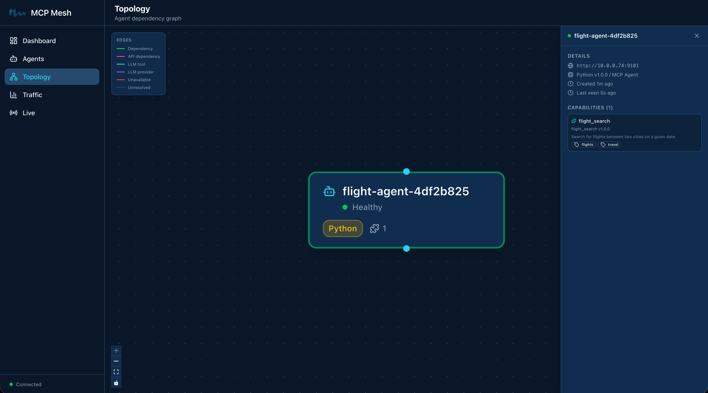
meshctl list shows you what’s running:
$ meshctl list
Registry: running (http://localhost:8000) - 1 healthy
NAME RUNTIME TYPE STATUS DEPS ENDPOINT AGE LAST SEEN
--------------------------------------------------------------------------------------------------------------------------
flight-agent-ba2b3bc8 Python Agent healthy 0/0 10.0.0.74:9101 53s 3sThe agent registers as flight-agent-ba2b3bc8 — mesh
appends a short hash to ensure uniqueness when multiple instances of the
same agent run. All meshctl commands accept the prefix
flight-agent for convenience, so you never need to type the
hash.
The DEPS column is 0/0 because
flight-agent doesn’t depend on any other agent. When you
add hotel and weather agents on Day 2, this column will show
resolved-over-declared dependencies and turn green when all dependencies
are satisfied.
meshctl list --tools shows every tool registered across
all agents:
$ meshctl list --tools
TOOL AGENT CAPABILITY TAGS
----------------------------------------------------------------------------------------
flight_search flight-agent-ba2b3bc8 flight_search flights,travel
1 tool(s) foundAnd meshctl status flight-agent gives you a detailed
breakdown — capabilities, endpoint, version, uptime:
$ meshctl status flight-agent
Agent Details: flight-agent-ba2b3bc8
================================================================================
Name : flight-agent-ba2b3bc8
Type : Agent
Runtime : Python
Status : healthy
Endpoint : http://10.0.0.74:9101
Version : 1.0.0
Dependencies : 0/0
Last Seen : 2026-04-12 05:29:01 (3s ago)
Created : 2026-04-12 01:28:06
Capabilities (1):
--------------------------------------------------------------------------------
CAPABILITY MCP TOOL VERSION TAGS
--------------------------------------------------------------------------------
flight_search flight_search 1.0.0 flights,travelmeshctl call discovers the agent via the registry and
sends an MCP JSON-RPC tools/call to it. You pass the tool
name and a JSON object with the arguments:
$ meshctl call flight_search '{"origin":"SFO","destination":"NRT","date":"2026-06-01"}'{
"_meta": {
"fastmcp": {
"wrap_result": true
}
},
"content": [
{
"type": "text",
"text": "[{\"carrier\":\"MH\",\"flight\":\"MH007\",\"origin\":\"SFO\",\"destination\":\"NRT\",\"date\":\"2026-06-01\",\"depart\":\"09:15\",\"arrive\":\"14:40\",\"price_usd\":842},{\"carrier\":\"SQ\",\"flight\":\"SQ017\",\"origin\":\"SFO\",\"destination\":\"NRT\",\"date\":\"2026-06-01\",\"depart\":\"11:50\",\"arrive\":\"17:05\",\"price_usd\":901}]"
}
],
"structuredContent": {
"result": [
{
"carrier": "MH",
"flight": "MH007",
"origin": "SFO",
"destination": "NRT",
"date": "2026-06-01",
"depart": "09:15",
"arrive": "14:40",
"price_usd": 842
},
{
"carrier": "SQ",
"flight": "SQ017",
"origin": "SFO",
"destination": "NRT",
"date": "2026-06-01",
"depart": "11:50",
"arrive": "17:05",
"price_usd": 901
}
]
},
"isError": false
}The response is a standard MCP tool result envelope. The flight data
you care about is under structuredContent.result — two
flights matching the stub data from your flight_search
function. The content field contains the same data as a
JSON string (the MCP text format), and _meta is FastMCP
internal metadata. When other agents call this tool via dependency
injection, mesh parses structuredContent automatically —
they receive the Python list directly.
meshctl call discovers the agent’s endpoint via the registry and
calls it. By default it proxies through the registry for convenience —
this is especially useful in Kubernetes where you only need to
port-forward the registry. You can call the agent directly with
--use-proxy=false for debugging.
One command stops the registry, the agent, and any other background
processes meshctl is tracking:
$ meshctl stop
Stopping 1 agent(s) in parallel...
Stopping agent 'flight-agent' (PID: 14560)...
Agent 'flight-agent' stopped
Stopping UI server (PID: 15245)...
UI server stopped
Stopping registry (PID: 14555)...
Registry stopped
Stopped 3 process(es)Agent name has a hash suffix. Your agent registers
as flight-agent-XXXXXXXX (name plus a random hash). This
ensures uniqueness when you run multiple instances. All meshctl commands
accept just the prefix (flight-agent) — you never need to
type the hash.
Warning about McpMeshTool parameters in logs. If you
check meshctl logs flight-agent, you may see a warning:
Function '__main__.flight_search' has 3 parameters but none are typed as McpMeshTool. Skipping injection of 0 dependencies.
This is harmless — it means your tool has no mesh dependencies to
inject, which is expected on Day 1. The warning disappears once you add
dependencies on Day 2.
meshctl stop reports a failed UI process. If
meshctl stop reports Failed to stop UI server,
it usually means a previous UI process is still running. Run
ps aux | grep meshui to find it and
kill <PID> to clean it up.
Port 8000 already in use. If
meshctl start fails because port 8000 is taken, another
service (or a previous registry) is using it. Stop the other service, or
set a different port with
MCP_MESH_REGISTRY_PORT=9000 meshctl start ....
You built, started, inspected, and called an agent using six
meshctl commands and a dozen lines of Python. The
flight_search function you wrote today is the same function
that will run on Kubernetes on Day 9 — same file, same decorators, same
types, no wrapper code or deployment-specific edits. That’s DDDI: the
agent doesn’t know or care where it’s running, and you get
dev-to-production with nothing in between.
meshctl man scaffold — the full scaffold CLI reference,
including the llm-agent and llm-provider
templates you’ll see in later chaptersmeshctl man decorators — the @mesh.tool,
@mesh.agent, @mesh.llm, and
@mesh.llm_provider referencemeshctl man quickstart — a condensed version of this
tutorial for when you already know mesh and want the commands backmeshctl man cli — full CLI reference for
start, list, call,
status, stopDay 2 — More Tools and
Dependency Injection adds four more tool agents and introduces
dependency injection between them — the flight_search tool
will start asking for user preferences from another agent, and you’ll
see how mesh resolves and injects those dependencies at runtime.
Yesterday you built one agent. Today you’ll build four more, connect them via dependency injection, and see mesh resolve dependencies at runtime. By the end you’ll have five agents working together — and you won’t have written a single line of networking code.
graph LR
FA[flight-agent] -->|depends on| UPA[user-prefs-agent]
PA[poi-agent] -->|depends on| WA[weather-agent]
HA[hotel-agent]
UPA
WA
style FA fill:#4a9eff,color:#fff
style PA fill:#4a9eff,color:#fff
style UPA fill:#1a8a4a,color:#fff
style WA fill:#1a8a4a,color:#fff
style HA fill:#1a8a4a,color:#fffFive agents. Two dependency arrows. flight-agent calls
user-prefs-agent to personalize results.
poi-agent calls weather-agent to recommend
indoor or outdoor activities. The other three —
hotel-agent, weather-agent, and
user-prefs-agent — are standalone tools with no
dependencies.
You know meshctl scaffold from Day 1. Scaffold four new
agents:
$ meshctl scaffold --name hotel-agent --agent-type tool --port 9102
$ meshctl scaffold --name weather-agent --agent-type tool --port 9103
$ meshctl scaffold --name poi-agent --agent-type tool --port 9104
$ meshctl scaffold --name user-prefs-agent --agent-type tool --port 9105Each command creates the same set of files you saw on Day 1:
main.py, Dockerfile,
helm-values.yaml, and the rest. You’ll replace the
generated main.py in each directory with the tool
implementations below.
These three agents have no dependencies. Each registers a single tool with the mesh.
hotel-agent — searches for hotels at a destination:
> *See the source code in the day's example directory.*weather-agent — returns a weather forecast:
> *See the source code in the day's example directory.*user-prefs-agent — returns user travel preferences:
> *See the source code in the day's example directory.*All three follow the same pattern from Day 1:
@app.tool() + @mesh.tool() with a
capability name and tags. No dependencies, no
injected parameters.
These two agents depend on other agents’ capabilities. This is where dependency injection comes in.
flight-agent — updated from Day 1 to depend on
user_preferences:
> *See the source code in the day's example directory.*Three things changed from Day 1:
dependencies=["user_preferences"] on
@mesh.tool declares that this tool needs the
user_preferences capability at runtime.user_prefs: mesh.McpMeshTool = None is
the injected parameter. At startup, mesh resolves the dependency by
finding an agent that advertises user_preferences, creates
a proxy, and injects it here.await user_prefs(user_id="demo-user")
calls the injected tool like a regular async function. No URL, no REST
client, no serialization code — mesh handles all of that behind the
proxy.The function also changed from def to
async def — dependency injection calls are async because
they cross process boundaries.
poi-agent — depends on
weather_forecast:
> *See the source code in the day's example directory.*Same pattern: declare the dependency in @mesh.tool,
accept an mesh.McpMeshTool parameter, and call it with
await. The search_pois function fetches the
weather forecast, checks the rain chance, and adjusts its
recommendations — indoor activities if rain is likely, outdoor
otherwise.
Here’s the complete flight-agent/main.py for
reference:
> *See the source code in the day's example directory.*Start all five with one command:
$ meshctl start --debug -d -w flight-agent/main.py hotel-agent/main.py weather-agent/main.py poi-agent/main.py user-prefs-agent/main.pyValidating prerequisites...
Using virtual environment: /tmp/trip-planner-day2/.venv/bin/python
All prerequisites validated successfully
Python: 3.11.14 (/tmp/trip-planner-day2/.venv/bin/python)
Virtual environment: .venv
Starting 5 agents in detach: flight-agent, hotel-agent, weather-agent, poi-agent, user-prefs-agent
Logs: ~/.mcp-mesh/logs/<agent>.log
Use 'meshctl logs <agent>' to view or 'meshctl stop' to stop allThe -w flag means mesh is watching your agent files —
edit any main.py, save it, and mesh restarts that agent
automatically. Combined with -d (detach) and
--debug (verbose logs), this gives you a tight development
loop: edit, save, call, see results.
Here’s what each flag does:
--debug — verbose logging. Useful for
seeing dependency resolution.-d — detach mode. All five agents run
in the background.-w — watch mode. Monitors agent
directories and auto-restarts on changes.If no registry is running, meshctl starts one
automatically, same as Day 1.
$ meshctl start --ui -dThe dashboard is at http://localhost:3080. You’ll see all five agents listed.
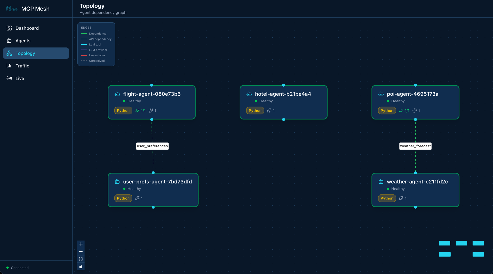
$ meshctl list
Registry: running (http://localhost:8000) - 5 healthy
NAME RUNTIME TYPE STATUS DEPS ENDPOINT AGE LAST SEEN
flight-agent-835864a0 Python Agent healthy 1/1 10.0.0.74:63297 5s 5s
hotel-agent-eb0eb637 Python Agent healthy 0/0 10.0.0.74:63298 5s 5s
poi-agent-5923d848 Python Agent healthy 1/1 10.0.0.74:63295 5s 5s
user-prefs-agent-950b70c3 Python Agent healthy 0/0 10.0.0.74:63294 5s 5s
weather-agent-1760466a Python Agent healthy 0/0 10.0.0.74:63296 5s 5sNotice the DEPS column. flight-agent shows
1/1 — one dependency declared, one resolved.
poi-agent also shows 1/1. The others show
0/0. When all dependencies are resolved, the agent is fully
operational.
List the tools:
$ meshctl list --tools
TOOL AGENT CAPABILITY TAGS
flight_search flight-agent-835864a0 flight_search flights,travel
get_user_prefs user-prefs-agent-950b70c3 user_preferences preferences,travel
get_weather weather-agent-1760466a weather_forecast weather,travel
hotel_search hotel-agent-eb0eb637 hotel_search hotels,travel
search_pois poi-agent-5923d848 poi_search poi,travel
5 tool(s) foundFive tools across five agents. Each tool’s capability name is how other agents find it via dependency injection.
Call flight_search. This triggers a cross-agent call —
flight-agent calls user-prefs-agent behind the
scenes to fetch user preferences:
$ meshctl call flight_search '{"origin":"SFO","destination":"NRT","date":"2026-06-01"}'The response includes personalized results. The stub preferences set a budget of $1000 and prefer SQ and MH airlines, so the $1150 AA flight is filtered out, and the preferred carriers sort first:
{
"_meta": {
"fastmcp": {
"wrap_result": true
}
},
"content": [
{
"type": "text",
"text": "[{\"carrier\":\"MH\",\"flight\":\"MH007\",\"origin\":\"SFO\",\"destination\":\"NRT\",\"date\":\"2026-06-01\",\"depart\":\"09:15\",\"arrive\":\"14:40\",\"price_usd\":842},{\"carrier\":\"SQ\",\"flight\":\"SQ017\",\"origin\":\"SFO\",\"destination\":\"NRT\",\"date\":\"2026-06-01\",\"depart\":\"11:50\",\"arrive\":\"17:05\",\"price_usd\":901}]"
}
],
"structuredContent": {
"result": [
{
"carrier": "MH",
"flight": "MH007",
"origin": "SFO",
"destination": "NRT",
"date": "2026-06-01",
"depart": "09:15",
"arrive": "14:40",
"price_usd": 842
},
{
"carrier": "SQ",
"flight": "SQ017",
"origin": "SFO",
"destination": "NRT",
"date": "2026-06-01",
"depart": "11:50",
"arrive": "17:05",
"price_usd": 901
}
]
},
"isError": false
}Now call search_pois. This triggers
poi-agent calling weather-agent:
$ meshctl call search_pois '{"location":"Tokyo"}'{
"content": [
{
"type": "text",
"text": "{\"location\":\"Tokyo\",\"weather_summary\":\"Partly cloudy in Tokyo on today, 28C high, 30% chance of rain.\",\"recommendation\":\"Weather looks good — outdoor activities recommended.\",\"pois\":[{\"name\":\"Senso-ji Temple\",\"type\":\"outdoor\",\"category\":\"cultural\",\"location\":\"Tokyo\"},{\"name\":\"Ueno Park\",\"type\":\"outdoor\",\"category\":\"nature\",\"location\":\"Tokyo\"},{\"name\":\"Meiji Shrine\",\"type\":\"outdoor\",\"category\":\"cultural\",\"location\":\"Tokyo\"},{\"name\":\"TeamLab Borderless\",\"type\":\"indoor\",\"category\":\"art\",\"location\":\"Tokyo\"}]}"
}
],
"structuredContent": {
"location": "Tokyo",
"weather_summary": "Partly cloudy in Tokyo on today, 28C high, 30% chance of rain.",
"recommendation": "Weather looks good — outdoor activities recommended.",
"pois": [
{"name": "Senso-ji Temple", "type": "outdoor", "category": "cultural", "location": "Tokyo"},
{"name": "Ueno Park", "type": "outdoor", "category": "nature", "location": "Tokyo"},
{"name": "Meiji Shrine", "type": "outdoor", "category": "cultural", "location": "Tokyo"},
{"name": "TeamLab Borderless", "type": "indoor", "category": "art", "location": "Tokyo"}
]
},
"isError": false
}The 30% rain chance is below the 50% threshold, so
poi-agent recommends outdoor activities. Change the stub
data in weather-agent to return 80% rain chance, save the
file (watch mode restarts it automatically), and call again — you’ll get
indoor recommendations instead.
!!! tip “meshctl DX — watch mode” Edit your
flight_search function, save the file, and mesh
auto-restarts the agent. No manual stop/start cycle. Combined with
-d, you get a development loop that feels like editing a
local script — change, save, call, see results.
!!! info “What is DDDI?” Your flight_search function
calls user_prefs() like a local function. It has no idea
that user_prefs lives in a different process, possibly on a
different machine. mesh resolved the dependency by matching the
user_preferences capability name, injected a proxy that
handles the network call, and your code stayed clean. That’s Distributed
Dynamic Dependency Injection — DDDI.
$ meshctl stopOn Day 3 you’ll restart with distributed tracing enabled — the agents
need the --dte flag to publish trace events, so a fresh
start is needed.
“Dependency not resolved” — agent shows 0/1 in DEPS column. This means the agent that provides the required capability hasn’t registered yet. mesh doesn’t crash — the dependent agent starts and waits. Once the provider agent registers, mesh resolves the dependency and the DEPS column updates to 1/1. If you start agents one at a time, you may see this briefly. Starting all agents together (as in Step 3) avoids it in practice.
DI call returns empty dict instead of preferences.
Check that user_prefs is not None. The
if user_prefs else {} guard in the function handles the
case where the dependency wasn’t resolved. If it’s consistently
None, check meshctl status flight-agent to
verify the dependency is resolved.
Watch mode doesn’t pick up changes. Verify that the
file you edited is in the same directory that meshctl start
is watching. Watch mode monitors the directory of the
main.py file you passed to meshctl start.
Agent ports change on every restart. When using
-w (watch mode), meshctl starts agents with the HTTP port
set to 0 — the OS assigns a random available port. This is
intentional: when watch mode restarts an agent after a code change, the
old process needs to release its port before the new one starts. Since
mesh discovers agents by capability name through the registry (not by
URL), the actual port number doesn’t matter. meshctl call
and dependency injection both resolve endpoints via the registry, so
everything works regardless of which port an agent lands on.
You built five agents, connected two of them via dependency injection, and called tools that trigger cross-agent calls. The total networking code you wrote: zero lines. The dependency injection, service discovery, and proxy creation all happened at runtime — declared in decorators, resolved by mesh.
meshctl man dependency-injection — the full DI
reference, including tag-based dependency matching and multi-dependency
patternsmeshctl man capabilities — how capabilities and tags
work together for service discoverymeshctl man cli — full CLI reference for
start, list, call,
status, stopDay 3 sets up the observability stack for distributed tracing, then adds an LLM provider agent and a planner — your first agent that can reason, not just return data.
On Day 2 you built five tool agents with dependency injection. Today you’ll restart them with distributed tracing enabled, add an LLM provider, and build your first agent that can reason – a trip planner that generates itineraries from natural language.
graph LR
FA[flight-agent] -->|depends on| UPA[user-prefs-agent]
PA[poi-agent] -->|depends on| WA[weather-agent]
HA[hotel-agent]
PL[planner-agent] -->|uses LLM| CP[claude-provider]
style FA fill:#4a9eff,color:#fff
style PA fill:#4a9eff,color:#fff
style UPA fill:#1a8a4a,color:#fff
style WA fill:#1a8a4a,color:#fff
style HA fill:#1a8a4a,color:#fff
style CP fill:#9b59b6,color:#fff
style PL fill:#9b59b6,color:#fffSeven agents. The five you already know (blue and green) plus two new
ones in purple: claude-provider wraps the Claude API as a
mesh capability, and planner-agent consumes that capability
to generate trip itineraries. The planner connects to the provider
through the same capability-based discovery that
flight-agent uses to find user-prefs-agent –
no hardcoded URLs, no model-specific code in the planner.
Today has five parts:
Mesh agents publish trace events to Redis. The registry consumes
those events and exports them to Tempo. You view traces with
meshctl trace or in Grafana. Before any of that works, you
need the observability stack running.
$ meshctl scaffold --observabilityThis generates a docker-compose.observability.yml with
Redis, Tempo, and Grafana, plus the supporting config files (Tempo
config, Grafana provisioning).
$ docker compose -f docker-compose.observability.yml up -d Container trip-planner-redis Started
Container trip-planner-tempo Started
Container trip-planner-grafana StartedVerify everything is healthy:
$ docker compose -f docker-compose.observability.yml ps
NAME STATUS
trip-planner-redis Up (healthy)
trip-planner-tempo Up (healthy)
trip-planner-grafana Up (healthy)Three containers. Redis collects trace events on port 6379, Tempo stores traces on ports 3200 (HTTP) and 4317 (OTLP gRPC), and Grafana serves dashboards on port 3000.
!!! note “API key required” The LLM provider needs an
ANTHROPIC_API_KEY environment variable. If you don’t have
one, create one
here and export it:
export ANTHROPIC_API_KEY=sk-ant-...
An LLM provider wraps an external LLM API – Claude, GPT, Gemini – as
a mesh capability. Other agents discover it by capability name, the same
way tool agents discover each other. The provider agent is zero-code:
the @mesh.llm_provider decorator handles the LiteLLM
integration, request parsing, and response formatting.
$ meshctl scaffold --name claude-provider --agent-type llm-provider --model anthropic/claude-sonnet-4-5 --port 9106Replace the generated main.py with:
> *See the source code in the day's example directory.*The decorator does all the work:
model="anthropic/claude-sonnet-4-5" –
the LiteLLM model identifier. LiteLLM routes this to the Anthropic API
using your ANTHROPIC_API_KEY.capability="llm" – the capability name
other agents use to discover this provider.tags=["claude"] – tags for filtering.
On Day 4 you’ll add GPT and Gemini providers with different tags and
select between them.The function body is pass – the decorator generates the
full implementation.
Day 2 ended with meshctl stop, so start the five tool
agents alongside the new provider – this time with --dte to
enable distributed tracing:
$ meshctl start --dte --debug -d -w flight-agent/main.py hotel-agent/main.py weather-agent/main.py poi-agent/main.py user-prefs-agent/main.py claude-provider/main.pyStarting 6 agents in detach: flight-agent, hotel-agent, weather-agent, poi-agent, user-prefs-agent, claude-provider
Logs: ~/.mcp-mesh/logs/<agent>.log
Use 'meshctl logs <agent>' to view or 'meshctl stop' to stop allCheck that all six registered:
$ meshctl list
Registry: running (http://localhost:8000) - 6 healthy
NAME RUNTIME TYPE STATUS DEPS ENDPOINT AGE LAST SEEN
claude-provider-a8eb909e Python Agent healthy 0/0 10.0.0.74:65349 5s 0s
flight-agent-be1924a4 Python Agent healthy 1/1 10.0.0.74:65350 5s 0s
hotel-agent-f8830ef1 Python Agent healthy 0/0 10.0.0.74:65354 5s 0s
poi-agent-801db357 Python Agent healthy 1/1 10.0.0.74:65351 5s 0s
user-prefs-agent-bfa9de39 Python Agent healthy 0/0 10.0.0.74:65353 5s 0s
weather-agent-0aed0742 Python Agent healthy 0/0 10.0.0.74:65355 5s 0sSix agents. The five tool agents from Day 2 plus the new provider.
The --dte flag enables distributed tracing for all of them
– every cross-agent call now publishes trace events to Redis.
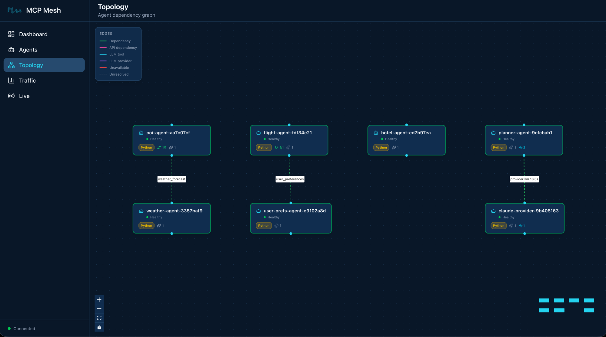
The planner agent uses @mesh.llm to consume an LLM
capability from the mesh. It takes a destination, dates, and budget,
feeds them into a Jinja prompt template, and returns an LLM-generated
itinerary.
Create planner-agent/prompts/plan_trip.j2:
> *See the source code in the day's example directory.*The template variables – {{ destination }},
{{ dates }}, {{ budget }} – are populated from
the context model at call time.
Scaffold the agent, then replace main.py:
$ meshctl scaffold --name planner-agent --agent-type llm-agent --port 9107> *See the source code in the day's example directory.*Three things to note:
TripRequest(MeshContextModel)
defines the context fields that map to template variables. Each field
becomes a tool parameter and a template variable.
system_prompt="file://prompts/plan_trip.j2"
loads the Jinja template from disk. At call time, mesh renders the
template with the context fields and passes the result as the system
prompt to the LLM.
provider={"capability": "llm"}
tells mesh to find any agent that advertises the llm
capability. Right now that’s claude-provider. The planner
doesn’t know or care which model is behind that capability.
The llm parameter is injected by mesh, just like
mesh.McpMeshTool in DI. Calling await llm(...)
sends the user message plus the rendered system prompt to the resolved
LLM provider.
$ meshctl start --dte --debug -d -w planner-agent/main.pyCheck the full mesh:
$ meshctl list
Registry: running (http://localhost:8000) - 7 healthy
NAME RUNTIME TYPE STATUS DEPS ENDPOINT AGE LAST SEEN
claude-provider-a8eb909e Python Agent healthy 0/0 10.0.0.74:65349 57s 2s
flight-agent-be1924a4 Python Agent healthy 1/1 10.0.0.74:65350 57s 2s
hotel-agent-f8830ef1 Python Agent healthy 0/0 10.0.0.74:65354 57s 2s
planner-agent-2efb4dce Python Agent healthy 0/0 10.0.0.74:65352 57s 2s
poi-agent-801db357 Python Agent healthy 1/1 10.0.0.74:65351 57s 2s
user-prefs-agent-bfa9de39 Python Agent healthy 0/0 10.0.0.74:65353 57s 2s
weather-agent-0aed0742 Python Agent healthy 0/0 10.0.0.74:65355 57s 2sSeven agents. List the tools:
$ meshctl list --tools
TOOL AGENT CAPABILITY TAGS
--------------------------------------------------------------------------------------------
claude_provider claude-provider-a8eb909e llm claude
flight_search flight-agent-be1924a4 flight_search flights,travel
get_user_prefs user-prefs-agent-bfa9de39 user_preferences preferences,travel
get_weather weather-agent-0aed0742 weather_forecast weather,travel
hotel_search hotel-agent-f8830ef1 hotel_search hotels,travel
plan_trip planner-agent-2efb4dce trip_planning planner,travel,llm
search_pois poi-agent-801db357 poi_search poi,travel
7 tool(s) foundSeven tools. Notice claude_provider with capability
llm and plan_trip with capability
trip_planning.
$ meshctl start --ui -dOpen http://localhost:3080 to see
all seven agents in the dashboard. The two new agents –
claude-provider and planner-agent – appear
alongside the five from Day 2.
$ meshctl call plan_trip '{"destination":"Kyoto","dates":"June 1-5, 2026","budget":"$2000"}' --traceThe --trace flag tells meshctl to display the trace ID
after the response. The response is an LLM-generated itinerary:
{
"structuredContent": {
"result": "# Kyoto Itinerary: June 1-5, 2026 | Budget: $2,000\n\n## Budget Breakdown\n- Accommodation (4 nights): ~$400\n- Food: ~$400\n- Transportation: ~$100\n- Activities: ~$150\n- Reserve: ~$950\n\n## Day 1 - June 1 (Arrival & Eastern Kyoto)\nMorning: Arrive, check in (Gion area). Get ICOCA transit card.\nAfternoon: Kiyomizu-dera Temple -> Ninenzaka & Sannenzaka streets.\nEvening: Stroll through Gion district.\nRestaurant: Gion Kappa - kaiseki sets (~$30-40)\n\n## Day 2 - June 2 (Arashiyama)\nMorning: Bamboo Grove -> Tenryu-ji Temple.\nAfternoon: Monkey Park Iwatayama -> Togetsukyo Bridge.\nEvening: Pontocho Alley.\nRestaurant: Arashiyama Yoshimura - soba (~$15-20)\n\n..."
},
"isError": false
}
Trace ID: 2bb20ffe16ff3e03ff356aada9d11947
View trace: meshctl trace 2bb20ffe16ff3e03ff356aada9d11947Here’s the call flow:
meshctl call discovers plan_trip via the
registry and sends your JSON arguments to
planner-agent.planner-agent populates TripRequest from
the arguments, renders plan_trip.j2 with
destination="Kyoto", dates="June 1-5, 2026",
budget="$2000", and sets it as the system prompt.await llm(...) resolves the llm capability
to claude-provider and sends the system prompt plus user
message.claude-provider calls the Anthropic API via LiteLLM and
returns the generated text.You wrote no HTTP client code, no API key management in the planner, no routing logic. The planner knows what it needs (an LLM), not where to find it.
Now that the observability stack is running, you can inspect the full call tree. Copy the trace ID from the output above:
$ meshctl trace 2bb20ffe16ff3e03ff356aada9d11947Call Tree for trace 2bb20ffe16ff3e03ff356aada9d11947
└─ plan_trip (planner-agent) [21835ms]
└─ claude_provider (claude-provider) [21812ms]
Summary: 3 spans across 2 agents | 21.84s
Agents: claude-provider, planner-agentThe trace tree shows exactly what happened:
plan_trip (planner-agent) – the entry
point. Received your JSON arguments, rendered the Jinja template, and
delegated to the LLM provider.claude_provider (claude-provider) –
the LLM provider. Received the rendered prompt, called the Anthropic API
via LiteLLM, and returned the generated itinerary.The total time (~22 seconds) is almost entirely Claude’s inference time. The mesh overhead – discovery, routing, serialization – is in the low milliseconds.
The Traffic page in the mesh UI tracks this automatically – per-edge latency, error rates, token usage by model, and data transferred per agent. No instrumentation code needed; mesh collects it from the trace data.
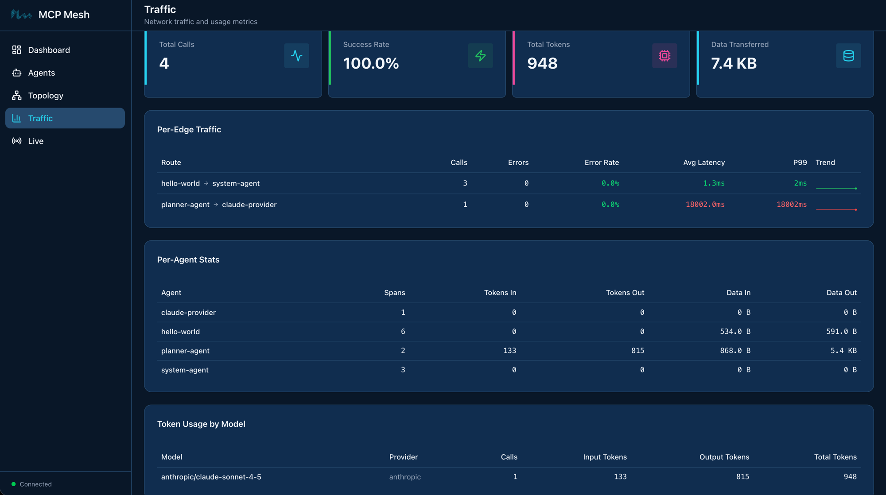
In Grafana at http://localhost:3000, you can drill into each span, see request/response payloads, and visualize latency in a waterfall chart. Navigate to Explore and select the Tempo datasource to search for traces.
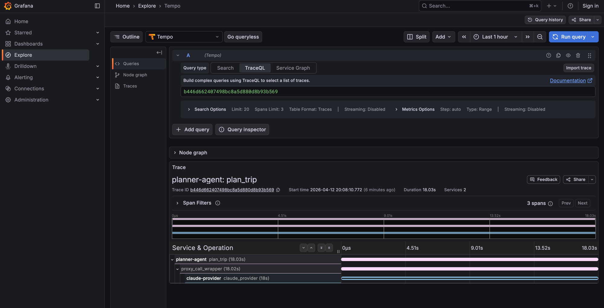
This is the payoff for the observability setup at the start of the
chapter. From now on, every meshctl call --trace gives you
a trace ID, and meshctl trace <id> shows the full
call tree across all agents involved. As your mesh grows, traces will
span more agents – on Day 4 when the planner calls tool agents, the
trace tree will show the full chain from planner to LLM to tool agents
and back.
!!! tip “Trace propagation” Trace context propagates automatically
across mesh calls. When planner-agent calls
claude-provider, mesh injects trace headers so the
provider’s spans link back to the planner’s span. You don’t need to pass
trace IDs manually.
!!! info “LLM provider abstraction” The planner declares a dependency
on the llm capability – it has no idea it’s talking to
Claude. On Day 4 you’ll add GPT and Gemini providers and swap between
them by changing a tag. The planner’s code won’t change.
From here on, your agents stay running between chapters. On Day 4
you’ll add more LLM providers and introduce provider tiers – just start
the new agents with --dte and they join the existing
mesh.
Keep the observability stack running too (docker compose
stays up). Traces from Day 4 calls will appear in the same Grafana
instance.
If you do need to stop for any reason, meshctl stop
shuts down all agents, and
docker compose -f docker-compose.observability.yml down
stops the observability stack.
Docker not running / compose fails. The
observability stack runs in Docker. Make sure Docker Desktop (or your
Docker daemon) is running before
docker compose -f docker-compose.observability.yml up -d.
If ports 6379, 3200, or 3000 are already in use, stop the conflicting
services or change the ports in
docker-compose.observability.yml.
ANTHROPIC_API_KEY not set. The
claude-provider agent needs an Anthropic API key. Set it in
your environment:
$ export ANTHROPIC_API_KEY=sk-ant-...If the key is missing, the provider will start but LLM calls will fail with an authentication error.
Traces not appearing. Check two things:
--dte (or
MCP_MESH_DISTRIBUTED_TRACING_ENABLED=true).redis://localhost:6379 (run
redis-cli ping).If you started agents without --dte, stop them with
meshctl stop and restart with the flag.
Observability stack on non-default ports. If you’re running Redis, Tempo, or Grafana on non-standard ports (because the defaults are already in use), set the corresponding environment variables before starting agents:
export REDIS_URL=redis://localhost:6380 # default: 6379
export TELEMETRY_ENDPOINT=localhost:4318 # default: 4317
export TEMPO_URL=http://localhost:3201 # default: 3200meshctl trace returns “trace not
found”. Traces take a few seconds to propagate from Redis
through the registry to Tempo. Wait 5-10 seconds after the call
completes, then try again. You can also pass --retries 5 to
have meshctl retry automatically.
You stood up an observability stack (Redis, Tempo, Grafana),
registered a zero-code LLM provider, built a planner agent that
generates itineraries via prompt templates, and traced the full call
tree across agents. The planner consumed the LLM capability the same way
flight-agent consumes user_preferences – by
declaring what it needs, not where to find it.
meshctl man llm – the full LLM integration reference,
including @mesh.llm_provider, @mesh.llm,
prompt templates, and context modelsmeshctl man observability – distributed tracing setup,
environment variables, and Grafana configurationmeshctl man decorators – the complete decorator
referenceDay 4 adds a second LLM provider (GPT), introduces tag-based provider selection with automatic failover, and connects the planner to your tool agents so it can look up real flight and hotel data while generating itineraries.
Your planner works, but it’s locked to one LLM provider and generates plans from imagination. Today you’ll add a second LLM provider, introduce preference-based routing with automatic failover, and connect the planner to your tool agents so it plans with real flight and hotel data.
graph LR
subgraph Providers
CP[claude-provider]
OP[openai-provider]
end
subgraph Tool Agents
FA[flight-agent] -->|depends on| UPA[user-prefs-agent]
PA[poi-agent] -->|depends on| WA[weather-agent]
HA[hotel-agent]
end
PL[planner-agent] -.->|"+claude" preference| CP
PL -.->|failover| OP
PL ==>|tier-1 prefetch| UPA
PL -.->|tier-2 LLM tools| FA
PL -.->|tier-2 LLM tools| HA
PL -.->|tier-2 LLM tools| WA
PL -.->|tier-2 LLM tools| PA
style FA fill:#4a9eff,color:#fff
style PA fill:#4a9eff,color:#fff
style UPA fill:#1a8a4a,color:#fff
style WA fill:#1a8a4a,color:#fff
style HA fill:#1a8a4a,color:#fff
style CP fill:#9b59b6,color:#fff
style OP fill:#9b59b6,color:#fff
style PL fill:#9b59b6,color:#fffEight agents. The five tool agents you already know (blue and green), two LLM providers in purple (Claude and OpenAI), and the planner – now connected to everything. The solid arrow is a tier-1 dependency (prefetched before the LLM call). The dashed arrows are tier-2 (tools the LLM discovers and calls during its reasoning loop).
Today has six parts:
+/- tag operators!!! note “API keys required” You need both
ANTHROPIC_API_KEY and OPENAI_API_KEY set in
your environment. If you don’t have an OpenAI key, create one here and
export it: export OPENAI_API_KEY=sk-...
The OpenAI provider follows the exact same pattern as the Claude provider from Day 3. Same decorator, same zero-code body, different model string.
$ meshctl scaffold --name openai-provider --agent-type llm-provider --model openai/gpt-4o-mini --port 9108Replace the generated main.py with:
> *See the source code in the day's example directory.*The only differences from claude-provider:
model="openai/gpt-4o-mini" – LiteLLM
routes this to the OpenAI API using your
OPENAI_API_KEY.tags=["openai", "gpt"] – different
tags so consumers can distinguish between providers.The capability name is still "llm" – both providers
advertise the same capability. This is how the mesh supports multiple
providers for the same function.
$ meshctl start --dte --debug -d -w openai-provider/main.pyCheck the mesh:
$ meshctl listRegistry: running (http://localhost:8000) - 8 healthy
NAME RUNTIME TYPE STATUS DEPS ENDPOINT AGE LAST SEEN
claude-provider-0a89e8c6 Python Agent healthy 0/0 10.0.0.74:49486 1m 2s
flight-agent-a939da4b Python Agent healthy 1/1 10.0.0.74:49480 1m 2s
hotel-agent-9932ac09 Python Agent healthy 0/0 10.0.0.74:49482 1m 2s
openai-provider-40a5c637 Python Agent healthy 0/0 10.0.0.74:49485 4s 4s
planner-agent-fb07b918 Python Agent healthy 1/1 10.0.0.74:49484 1m 2s
poi-agent-97bd9fcc Python Agent healthy 1/1 10.0.0.74:49481 1m 2s
user-prefs-agent-87506c4a Python Agent healthy 0/0 10.0.0.74:49479 1m 2s
weather-agent-a6f7ea5e Python Agent healthy 0/0 10.0.0.74:49483 1m 2sEight agents. List the tools:
$ meshctl list --toolsTOOL AGENT CAPABILITY TAGS
--------------------------------------------------------------------------------------------
claude_provider claude-provider-0a89e8c6 llm claude
flight_search flight-agent-a939da4b flight_search flights,travel
get_user_prefs user-prefs-agent-87506c4a user_preferences preferences,travel
get_weather weather-agent-a6f7ea5e weather_forecast weather,travel
hotel_search hotel-agent-9932ac09 hotel_search hotels,travel
openai_provider openai-provider-40a5c637 llm openai,gpt
plan_trip planner-agent-fb07b918 trip_planning planner,travel,llm
search_pois poi-agent-97bd9fcc poi_search poi,travel
8 tool(s) foundTwo tools with capability llm –
claude_provider and openai_provider. Both are
available. Right now, if the planner asks for
{"capability": "llm"}, the registry picks one at random.
You need a way to express a preference.
MCP Mesh tags support three operators for consumer-side selection:
| Prefix | Meaning | Example |
|---|---|---|
| (none) | Required | "api" – must have this tag |
+ |
Preferred | "+claude" – bonus if present |
- |
Excluded | "-deprecated" – reject if present |
These operators are for the consumer side only (the
provider= or dependencies= spec). When you
declare tags on your provider, use plain strings without prefixes.
The matching algorithm:
-)+) presentIn Day 3, the planner used
provider={"capability": "llm"} – any provider will do. Now
add a preference for Claude:
> *See the source code in the day's example directory.*+claude means: “prefer a provider tagged
claude. If one is available, route there. If not, fall back
to any other provider with capability llm.” The
+ makes it a preference, not a requirement – the planner
still works even if Claude is down.
Compare with alternatives:
"claude" (no prefix) – required. If
Claude is down, the call fails. No fallback."+claude" – preferred. If Claude is
down, route to the next available provider. Automatic failover."-gemini" – excluded. Never route to a
provider tagged gemini, even if it’s the only one
available.This is where capability-based routing pays off. You’ll call the planner three times, stopping and restarting Claude between calls, and watch the trace show different providers without changing a single line of code.
$ meshctl call plan_trip '{"destination":"Kyoto","dates":"June 1-5, 2026","budget":"$2000"}' --traceThe response is a Kyoto itinerary. Check the trace:
$ meshctl trace <trace-id>Call Tree for trace 16f53c4095e481d329515600024f365c
════════════════════════════════════════════════════════════
└─ plan_trip (planner-agent) [18349ms] ✓
├─ get_user_prefs (user-prefs-agent) [1ms] ✓
└─ claude_provider (claude-provider) [18308ms] ✓
├─ search_pois (poi-agent) [31ms] ✓
│ └─ get_weather (weather-agent) [1ms] ✓
├─ get_weather (weather-agent) [0ms] ✓
├─ get_weather (weather-agent) [0ms] ✓
└─ hotel_search (hotel-agent) [1ms] ✓
────────────────────────────────────────────────────────────
Summary: 11 spans across 6 agents | 18.35s | ✓The planner routed to claude_provider. The tool calls
you see under the provider (search_pois,
get_weather, hotel_search) are tier-2 calls –
Claude decided to call those tools during its reasoning loop. More on
that in Part 4.
$ meshctl stop claude-providerAgent 'claude-provider' stoppedNow call the planner again. Same code, same arguments, same mesh:
$ meshctl call plan_trip '{"destination":"Tokyo","dates":"June 10-14, 2026","budget":"$3000"}' --traceThe response is a Tokyo itinerary – generated by GPT, not Claude. Check the trace:
$ meshctl trace <trace-id>Call Tree for trace 2c71f26f5df8bbe8efbdb36f4ddbbea8
════════════════════════════════════════════════════════════
└─ plan_trip (planner-agent) [15963ms] ✓
├─ get_user_prefs (user-prefs-agent) [0ms] ✓
└─ openai_provider (openai-provider) [15928ms] ✓
├─ flight_search (flight-agent) [22ms] ✓
│ └─ get_user_prefs (user-prefs-agent) [0ms] ✓
├─ hotel_search (hotel-agent) [0ms] ✓
└─ search_pois (poi-agent) [12ms] ✓
└─ get_weather (weather-agent) [0ms] ✓
────────────────────────────────────────────────────────────
Summary: 12 spans across 7 agents | 15.96s | ✓openai_provider (openai-provider). Same planner code,
same tools, different LLM. No code change, no config change, no restart.
The registry saw that Claude was down, found another healthy provider
with capability llm, and routed there.
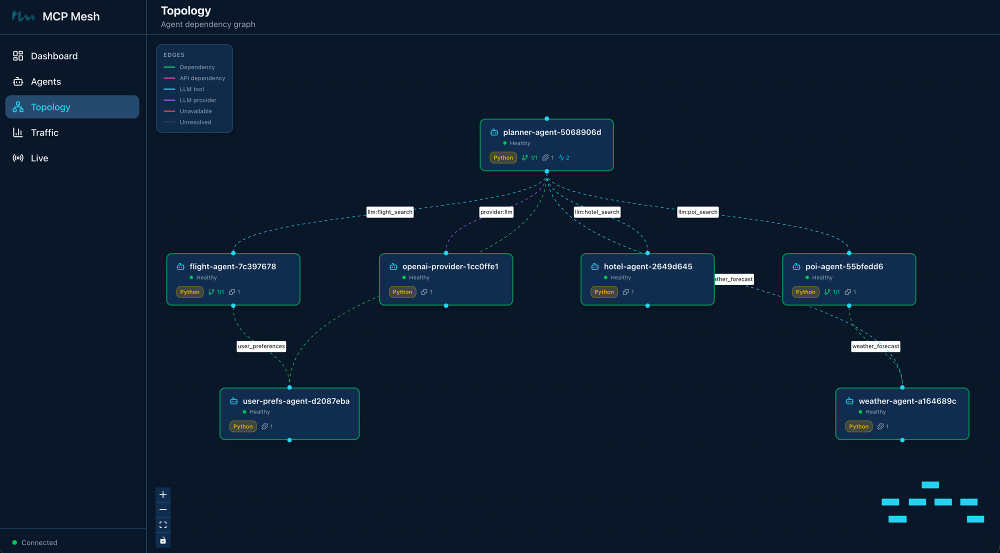
$ meshctl start --dte --debug -d -w claude-provider/main.pyWait a few seconds for registration, then call again:
$ meshctl call plan_trip '{"destination":"Osaka","dates":"June 20-22, 2026","budget":"$1500"}' --traceCheck the trace:
$ meshctl trace <trace-id>Call Tree for trace d208aeaebcc78ebfdaed968eebbeae28
════════════════════════════════════════════════════════════
└─ plan_trip (planner-agent) [18020ms] ✓
├─ get_user_prefs (user-prefs-agent) [0ms] ✓
└─ claude_provider (claude-provider) [17984ms] ✓
├─ flight_search (flight-agent) [13ms] ✓
│ └─ get_user_prefs (user-prefs-agent) [0ms] ✓
├─ get_weather (weather-agent) [0ms] ✓
├─ search_pois (poi-agent) [19ms] ✓
│ └─ get_weather (weather-agent) [0ms] ✓
└─ hotel_search (hotel-agent) [0ms] ✓
────────────────────────────────────────────────────────────
Summary: 18 spans across 7 agents | 18.02s | ✓Back to claude_provider. The +claude
preference kicks in again because Claude is healthy and has the highest
tag score.
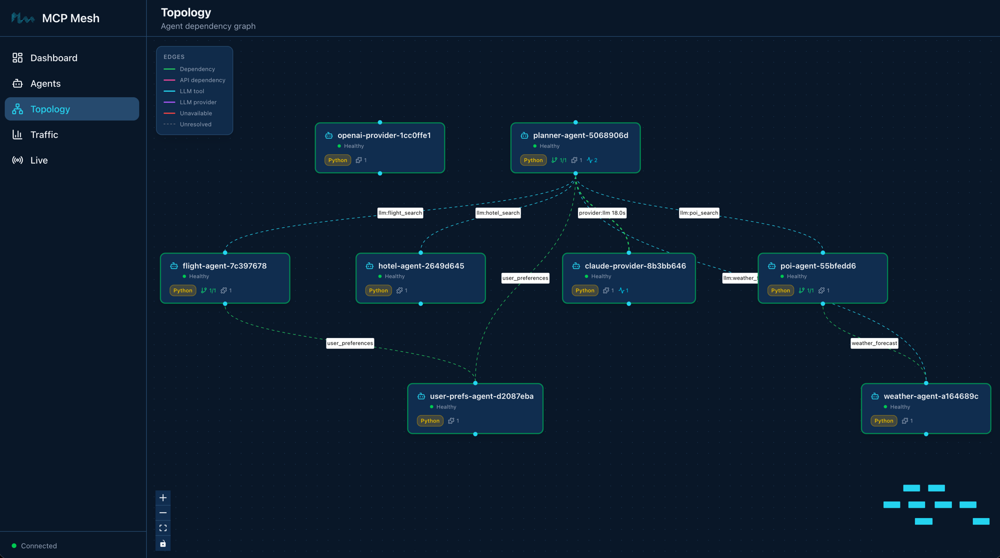
Notice that openai-provider is still healthy and
connected to the mesh. The planner routes to
claude-provider because of the +claude
preference tag — not because OpenAI is unavailable. Both providers are
ready; mesh picks the preferred one.
Three calls, three traces, two different providers. The planner’s code didn’t change once.
On Day 3, the planner generated itineraries from the LLM’s training data – no real flight prices, no actual hotel availability. Today you’ll connect it to your tool agents using two dependency mechanisms.
Tier-1 dependencies are fetched before the LLM call. Your code calls them explicitly and injects the results into the prompt context. The LLM always sees this data.
For the planner, that’s user_preferences – fetch the
user’s travel preferences and include them in every prompt:
> *See the source code in the day's example directory.*This is the same dependencies=[...] syntax from Day 2.
The user_prefs parameter is injected by mesh DI, just like
flight-agent gets its user_prefs dependency.
The planner calls it before the LLM call and formats the result into a
preferences summary string.
Tier-2 tools are made available to the LLM during its reasoning loop. The LLM discovers them via their schemas and decides which to call based on the user’s question. You don’t call them – the LLM does.
> *See the source code in the day's example directory.*The filter parameter tells the registry which tools to
expose to the LLM:
{"capability": "flight_search"} – flights{"capability": "hotel_search"} – hotels{"capability": "weather_forecast"} – weather{"capability": "poi_search"} – points of interestfilter_mode="all" means include every matching tool (not
just the best match per capability). max_iterations=10
gives the LLM up to 10 rounds of tool calling – enough to search
flights, check hotels, look up weather, and find attractions in a single
planning session.
Here is the updated planner with both tiers:
> *See the source code in the day's example directory.*The execution flow:
user_prefs is called
explicitly. The result is formatted and passed as
context={"user_preferences": prefs_summary} to the LLM
call. The Jinja template renders it into the system prompt.flight_search,
hotel_search, get_weather,
search_pois are presented to the LLM as callable tools. The
LLM decides which to call during await llm(...).The distinction matters:
The Jinja template now includes user preferences:
> *See the source code in the day's example directory.*The new guidelines tell the LLM to use the available tools for real
data rather than guessing. The {{ user_preferences }}
variable is populated from the tier-1 prefetch.
With all eight agents running:
$ meshctl call plan_trip '{"destination":"Kyoto","dates":"June 1-5, 2026","budget":"$2000"}' --traceThe response now includes real data from your tool agents – flight
prices from flight-agent, hotel options from
hotel-agent, weather from weather-agent, and
attractions from poi-agent. The LLM weaves this data into a
coherent itinerary, respecting the user’s preferences (preferred
airlines, minimum hotel stars, interests).
$ meshctl trace <trace-id>└─ plan_trip (planner-agent) [18349ms] ✓
├─ get_user_prefs (user-prefs-agent) [1ms] ✓
└─ claude_provider (claude-provider) [18308ms] ✓
├─ search_pois (poi-agent) [31ms] ✓
│ └─ get_weather (weather-agent) [1ms] ✓
├─ get_weather (weather-agent) [0ms] ✓
├─ get_weather (weather-agent) [0ms] ✓
└─ hotel_search (hotel-agent) [1ms] ✓This is the most complex trace in the tutorial so far. Read it top to bottom:
plan_trip (planner-agent) – the entry
point. Receives the user’s request.get_user_prefs (user-prefs-agent) –
tier-1 prefetch. The planner’s code calls this explicitly before the
LLM. Takes 1ms. User preferences are now in the prompt context.claude_provider (claude-provider) –
the LLM call. The planner sends the rendered prompt (with user
preferences baked in) plus the user message to Claude.search_pois, get_weather,
hotel_search – tier-2 tool calls. Claude decided
to call these tools during its reasoning loop. Each tool call appears as
a child span under claude_provider. Notice that
search_pois triggers its own DI call to
get_weather (from Day 2) – the dependency chain is fully
traced.The planner’s total time (~18 seconds) is mostly Claude’s inference. The mesh overhead – discovering tools, routing to providers, serializing requests – adds single-digit milliseconds.
!!! tip “Trace depth” The trace tree can go multiple levels deep.
plan_trip calls claude_provider, which calls
search_pois, which calls get_weather. Each hop
is a separate span, linked by trace context that propagates
automatically across mesh calls. You get this for free – no manual
instrumentation.
Your eight agents are running in watch mode. On Day 5 you’ll add an HTTP gateway. No need to stop between chapters.
OPENAI_API_KEY not set. The
openai-provider agent needs an OpenAI API key. Set it in
your environment:
$ export OPENAI_API_KEY=sk-...If the key is missing, the provider will start but LLM calls routed to it will fail with an authentication error.
Provider swap doesn’t work. Both providers must have
the same capability name ("llm"). Check with
meshctl list --tools – both claude_provider
and openai_provider should show capability
llm. If one shows a different capability, update the
capability parameter in
@mesh.llm_provider.
Tool calls not appearing in trace. Check two things:
filter parameter lists the correct
capabilities (flight_search, hotel_search,
etc.).max_iterations is high enough (10 is good). If set to
1, the LLM gets one shot and may not call any tools.Planner returns a generic plan without real data. The LLM didn’t call the tier-2 tools. This can happen if:
filter capabilities don’t match any registered
tools. Verify with meshctl list --tools.plan_trip.j2 includes the guideline about using available
tools.filter_mode is set to something other than
"all". Use "all" to expose all matching
tools.Tier-1 prefetch not working. Check that
user-prefs-agent is running and the planner shows
1/1 in the DEPS column of meshctl list. If it
shows 0/1, the dependency hasn’t resolved yet – wait a few
seconds and check again.
You added a provider, swapped it with zero code changes, and connected the planner to real data sources. The planner’s code changed in two places: a tag preference and a dependency list. Everything else – failover, tool discovery, trace propagation – happened at runtime.
meshctl man tags – the full tag matching reference,
including +/- operators and scoringmeshctl man llm – the @mesh.llm decorator
reference, including filter, filter_mode, and
max_iterationsmeshctl man capabilities – capability selectors and how
they compose with tags and versionsDay 5 wraps the trip planner in
a FastAPI gateway, exposing it as a REST API with
@mesh.route. Five lines of code, zero business logic in the
gateway – just HTTP to mesh and back.
Your trip planner works from the terminal via
meshctl call. But real users need an HTTP API. Today you’ll
wrap the planner in a FastAPI gateway – a thin REST endpoint that
bridges HTTP requests to mesh tool calls. By the end of Part 1, you’ll
have a complete, callable trip planning API.
graph LR
U[User] -->|"POST /plan"| GW[gateway]
GW -->|"trip_planning"| PL[planner-agent]
PL -->|"+claude"| CP[claude-provider]
PL -.->|failover| OP[openai-provider]
PL ==>|tier-1| UPA[user-prefs-agent]
CP -.->|tier-2| FA[flight-agent]
CP -.->|tier-2| HA[hotel-agent]
CP -.->|tier-2| WA[weather-agent]
CP -.->|tier-2| PA[poi-agent]
FA -->|depends on| UPA
PA -->|depends on| WA
style U fill:#555,color:#fff
style GW fill:#e67e22,color:#fff
style PL fill:#9b59b6,color:#fff
style CP fill:#9b59b6,color:#fff
style OP fill:#9b59b6,color:#fff
style FA fill:#4a9eff,color:#fff
style PA fill:#4a9eff,color:#fff
style UPA fill:#1a8a4a,color:#fff
style WA fill:#1a8a4a,color:#fff
style HA fill:#1a8a4a,color:#fffNine agents. Everything from Day 4 (blue, green, purple) plus the
gateway in orange. The user sends an HTTP request to the gateway. The
gateway calls the planner through mesh dependency injection. The planner
calls the LLM provider, which calls the tool agents. The gateway doesn’t
know any of this – it just calls plan_trip and returns the
result.
Today has four parts:
@mesh.routecurl the gateway and
compare with meshctl call$ meshctl scaffold --name gateway --agent-type api --lang python --port 8080Replace the generated main.py with:
> *See the source code in the day's example directory.*That’s the entire gateway. Three imports, a health check, and one route handler.
@mesh.route is a decorator for FastAPI handlers that
injects mesh capabilities as function parameters – the same dependency
injection that @mesh.tool uses, but for HTTP endpoints
instead of MCP tools.
> *See the source code in the day's example directory.*The key line is
@mesh.route(dependencies=["trip_planning"]). This tells
mesh: “Before this handler runs, resolve the trip_planning
capability and inject it as a callable.” The parameter name
plan_trip matches the tool name registered by
planner-agent. The type hint McpMeshTool tells
mesh to inject a tool proxy.
The handler is five lines of code:
The gateway doesn’t import the planner. It doesn’t know the planner’s
URL. It declares a dependency on trip_planning, and mesh
injects a callable. When you add new tool agents on Day 6, the gateway
won’t change – it calls the planner, and the planner discovers new tools
automatically.
Your eight agents from Day 4 should still be running. Add the gateway:
$ meshctl start --dte --debug -d -w gateway/main.pyCheck the mesh:
$ meshctl listRegistry: running (http://localhost:8000) - 9 healthy
NAME RUNTIME TYPE STATUS DEPS ENDPOINT AGE LAST SEEN
claude-provider-0a89e8c6 Python Agent healthy 0/0 10.0.0.74:49486 10m 2s
flight-agent-a939da4b Python Agent healthy 1/1 10.0.0.74:49480 10m 2s
gateway-7b3f2e91 Python API healthy 1/1 10.0.0.74:8080 4s 4s
hotel-agent-9932ac09 Python Agent healthy 0/0 10.0.0.74:49482 10m 2s
openai-provider-40a5c637 Python Agent healthy 0/0 10.0.0.74:49485 10m 2s
planner-agent-fb07b918 Python Agent healthy 1/1 10.0.0.74:49484 10m 2s
poi-agent-97bd9fcc Python Agent healthy 1/1 10.0.0.74:49481 10m 2s
user-prefs-agent-87506c4a Python Agent healthy 0/0 10.0.0.74:49479 10m 2s
weather-agent-a6f7ea5e Python Agent healthy 0/0 10.0.0.74:49483 10m 2sNine agents. The gateway shows type API (not
Agent) and its dependency 1/1 resolved – it
found the trip_planning capability from
planner-agent.
List the tools:
$ meshctl list --toolsTOOL AGENT CAPABILITY TAGS
--------------------------------------------------------------------------------------------
claude_provider claude-provider-0a89e8c6 llm claude
flight_search flight-agent-a939da4b flight_search flights,travel
get_user_prefs user-prefs-agent-87506c4a user_preferences preferences,travel
get_weather weather-agent-a6f7ea5e weather_forecast weather,travel
hotel_search hotel-agent-9932ac09 hotel_search hotels,travel
openai_provider openai-provider-40a5c637 llm openai,gpt
plan_trip planner-agent-fb07b918 trip_planning planner,travel,llm
search_pois poi-agent-97bd9fcc poi_search poi,travel
8 tool(s) foundThe gateway doesn’t appear in the tool list – it doesn’t expose any
tools. It consumes the trip_planning capability via
@mesh.route, not @mesh.tool. This is the
difference between an API agent and a tool agent: API agents are HTTP
entry points into the mesh, not MCP tool providers.
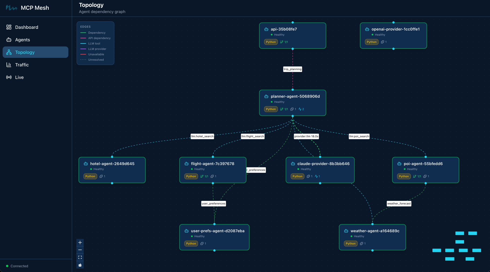
$ curl -s -X POST http://localhost:8080/plan \
-H "Content-Type: application/json" \
-d '{"destination":"Kyoto","dates":"June 1-5, 2026","budget":"$2000"}'{
"result": "## Kyoto Trip Itinerary: June 1-5, 2026\n\n**Budget: $2,000**\n\n### Day 1 (June 1) - Arrival & Eastern Kyoto\n\n**Morning:**\n- Arrive via SQ017 ($901) — preferred airline per your preferences\n- Check into Sakura Inn ($95/night, 3-star) — meets your minimum star rating\n\n**Afternoon:**\n- Visit Fushimi Inari Shrine (cultural — matches your interests)\n- Walk the thousand torii gates trail\n\n**Evening:**\n- Dinner at Nishiki Market area — street food tour (food interest)\n- Explore Gion district\n\n..."
}A full trip itinerary, personalized with the user’s preferences (preferred airlines, hotel stars, interests), built from real data returned by your tool agents.
For comparison, the same call through meshctl:
$ meshctl call plan_trip '{"destination":"Kyoto","dates":"June 1-5, 2026","budget":"$2000"}' --traceSame result, different transport. The curl path goes
user -> gateway -> planner -> LLM -> tools. The
meshctl path goes user -> registry -> planner ->
LLM -> tools. Both end up at the same planner with the same
tools.
If you called via meshctl --trace, you got a trace ID.
View it:
$ meshctl trace <trace-id>Call Tree for trace a4e8b2c91f7d3e56a8120900037f48d1
════════════════════════════════════════════════════════════
└─ plan_trip (planner-agent) [17842ms] ✓
├─ get_user_prefs (user-prefs-agent) [1ms] ✓
└─ claude_provider (claude-provider) [17803ms] ✓
├─ flight_search (flight-agent) [15ms] ✓
│ └─ get_user_prefs (user-prefs-agent) [0ms] ✓
├─ hotel_search (hotel-agent) [1ms] ✓
├─ get_weather (weather-agent) [0ms] ✓
├─ search_pois (poi-agent) [22ms] ✓
│ └─ get_weather (weather-agent) [0ms] ✓
└─ get_weather (weather-agent) [0ms] ✓
────────────────────────────────────────────────────────────
Summary: 14 spans across 7 agents | 17.84s | ✓The full call tree: planner prefetches user preferences (tier-1), calls Claude (who calls flight, hotel, weather, and POI tools during its reasoning loop), and returns the assembled itinerary. Every hop is a separate span with sub-millisecond mesh overhead.
!!! tip “The thin wrapper pattern” The gateway has no business logic.
It translates HTTP to mesh and mesh to HTTP. That’s it. When you add a
new tool agent on Day 6, the gateway doesn’t change – it calls the
planner, and the planner discovers new tools automatically. If you need
a second endpoint (say, POST /flights for direct flight
search), you add one @mesh.route handler. The gateway stays
thin.
!!! tip “Choose your adventure” One of mesh’s strengths is that any agent – including the gateway – can be swapped for a different language without changing anything else. The planner, providers, and tool agents don’t care what language the gateway is written in.
Want to see this in action? Pick one:
- **[Build the gateway in Spring Boot](../java/spring-boot-integration.md)** --
same REST endpoints, same mesh DI, Java instead of Python
- **[Build the gateway in Express](../typescript/express-integration.md)** --
same endpoints, TypeScript
- **Skip** -- continue to [Day 6](day-06-chat-history.md) with the FastAPI
gateway
Stop the Python gateway with `meshctl stop gateway`, build the replacement
in your language of choice, and start it with `meshctl start`. The rest of
the mesh keeps running.That’s Part 1. You have a working trip planner: nine agents, two LLM
providers with automatic failover, dependency injection across tools and
providers, prompt templates, distributed traces, and an HTTP API. All of
it running locally with meshctl start and an observability
stack in Docker.
Part 2 grows this into something production-shaped – chat history, specialist committees, Docker Compose packaging, Kubernetes deployment, and a full observability walkthrough.
Your nine agents are running in watch mode. On Day 6 you’ll add Redis-backed chat history. No need to stop between chapters.
Port 8080 already in use. The gateway defaults to
port 8080. If another service is using that port, either stop the
conflicting service or change the port in
gateway/main.py:
uvicorn.run(app, host="0.0.0.0", port=8081, log_level="info")FastAPI not installed. The gateway requires
fastapi and uvicorn. If you see
ModuleNotFoundError: No module named 'fastapi', install
them in your venv:
$ pip install fastapi uvicornGateway starts but curl fails. Check three things:
meshctl list should show
gateway with status healthy and deps
1/1.meshctl list
output for the gateway’s endpoint.trip_planning. If the planner is down, the gateway starts
but tool injection fails.curl returns an error response. If the response is
{"error": "trip_planning capability unavailable"}, the
planner hasn’t registered yet or its dependency on llm
hasn’t resolved. Check meshctl list – the planner should
show healthy with deps 1/1. Also verify your
LLM API keys are set (ANTHROPIC_API_KEY or
OPENAI_API_KEY).
curl returns empty or truncated response. The LLM is
still generating. Trip planning calls take 15-20 seconds depending on
the LLM provider. If curl times out, increase the
timeout:
$ curl -s --max-time 60 -X POST http://localhost:8080/plan ...You wrapped your trip planner in a five-line FastAPI handler,
bridging HTTP to mesh with @mesh.route. The gateway is a
thin entry point – no business logic, no planner imports, no hardcoded
URLs. It declares what it needs (trip_planning), mesh
injects a callable, and the handler forwards the request. Two transports
(curl and meshctl) reach the same planner through different paths.
meshctl man fastapi – the full @mesh.route
reference, including multiple dependencies, middleware configuration,
and CORS setupmeshctl man decorators – the complete decorator
referencemeshctl man capabilities – capability selectors and
dependency resolutionDay 6 adds Redis-backed chat history so users can iterate on their trip plans across multiple turns.
Your trip planner generates great itineraries, but every call starts from scratch. Real users iterate – “make it cheaper,” “add a beach day,” “what about hotels near the train station.” Today you add conversation memory so the planner remembers what you have discussed.
graph LR
U[User] -->|"POST /plan"| GW[gateway]
GW -->|"trip_planning"| PL[planner-agent]
PL -->|"chat_history"| CH[chat-history-agent]
PL -->|"+claude"| CP[claude-provider]
PL -.->|failover| OP[openai-provider]
PL ==>|tier-1| UPA[user-prefs-agent]
CP -.->|tier-2| FA[flight-agent]
CP -.->|tier-2| HA[hotel-agent]
CP -.->|tier-2| WA[weather-agent]
CP -.->|tier-2| PA[poi-agent]
FA -->|depends on| UPA
PA -->|depends on| WA
style U fill:#555,color:#fff
style GW fill:#e67e22,color:#fff
style CH fill:#1abc9c,color:#fff
style PL fill:#9b59b6,color:#fff
style CP fill:#9b59b6,color:#fff
style OP fill:#9b59b6,color:#fff
style FA fill:#4a9eff,color:#fff
style PA fill:#4a9eff,color:#fff
style UPA fill:#1a8a4a,color:#fff
style WA fill:#1a8a4a,color:#fff
style HA fill:#1a8a4a,color:#fffTen agents. Everything from Day 5 plus
chat-history-agent in teal. The planner fetches prior turns
from chat history before calling the LLM, and saves both the user
message and the response afterward. The gateway stays thin – it just
passes the session ID through.
Today has four parts:
Chat history is just another mesh tool agent. The same dependency
injection that wires flight-agent wires
chat-history-agent. There is no special framework primitive
for state – you write an agent that wraps a data store, and other agents
call it like any other tool.
$ meshctl scaffold --name chat-history-agent --agent-type tool --port 9109Created agent 'chat-history-agent' in chat-history-agent/
Generated files:
chat-history-agent/
├── .dockerignore
├── Dockerfile
├── README.md
├── __init__.py
├── __main__.py
├── helm-values.yaml
├── main.py
└── requirements.txtThe agent needs redis-py to talk to the Redis instance
from your observability stack (Day 3’s
docker-compose.observability.yml already runs Redis on port
6379):
> *See the source code in the day's example directory.*Replace the generated main.py with:
> *See the source code in the day's example directory.*Two tools, one capability. save_turn appends a
JSON-encoded turn to a Redis list keyed by session ID.
get_history reads the most recent turns from that list.
Both tools share the chat_history capability – when the
planner declares a dependency on chat_history, mesh injects
a proxy that can call either tool by name.
The Redis connection is straightforward: a module-level
redis.Redis client pointed at localhost:6379
(configurable via environment variables for Docker/Kubernetes
deployment).
> *See the source code in the day's example directory.*Swap Redis for Postgres by editing one agent. Add encryption by extending one agent. The gateway and planner do not move. mesh does not need a chat history primitive – the general abstraction (any MCP tool anywhere is a local function call) handles it.
The planner gains chat history as a tier-1 dependency alongside user preferences. It fetches history before the LLM call and saves turns after. The gateway stays thin – it just passes the session ID.
> *See the source code in the day's example directory.*The @mesh.tool decorator now declares two dependencies
instead of one:
> *See the source code in the day's example directory.*Both user_preferences and chat_history are
tier-1 dependencies – resolved before the tool function runs. The
planner calls chat_history.call_tool("get_history", {...})
and chat_history.call_tool("save_turn", {...}) because the
chat_history capability exposes two tools. For
user_prefs, the single-tool shorthand
(await user_prefs(...)) still works.
Before the LLM call, the planner fetches the conversation history for the current session:
> *See the source code in the day's example directory.*When history is present, the planner passes the full message list to the LLM instead of a single string:
> *See the source code in the day's example directory.*The @mesh.llm decorator handles multi-turn natively –
pass a list of {"role": "...", "content": "..."} dicts as
the first argument to llm() and the decorator builds the
correct LLM API call. The system prompt from the Jinja2 template is
inserted automatically.
After the LLM responds, the planner saves both the user turn and the assistant turn so the next request sees them:
> *See the source code in the day's example directory.*The gateway gains a session_id parameter. Everything
else stays the same – one dependency, five lines of code.
> *See the source code in the day's example directory.*> *See the source code in the day's example directory.*If the client sends X-Session-Id, the gateway uses it.
Otherwise it generates a UUID and returns it in the response so the
client can use it for follow-up calls. The gateway passes
session_id to the planner alongside the trip parameters –
the planner handles the rest.
If redis is not already in your venv:
$ pip install redisYour nine agents from Day 5 should still be running. Add
chat-history-agent:
$ meshctl start --dte --debug -d -w chat-history-agent/main.pyIf you are starting fresh, launch everything at once:
$ meshctl start --dte --debug -d -w \
chat-history-agent/main.py \
claude-provider/main.py \
openai-provider/main.py \
flight-agent/main.py \
hotel-agent/main.py \
weather-agent/main.py \
poi-agent/main.py \
user-prefs-agent/main.py \
planner-agent/main.py \
gateway/main.pyCheck the mesh:
$ meshctl listRegistry: running (http://localhost:8000) - 10 healthy
NAME RUNTIME TYPE STATUS DEPS ENDPOINT AGE LAST SEEN
chat-history-agent-3f2a1b9c Python Agent healthy 0/0 10.0.0.74:9109 8s 2s
claude-provider-0a89e8c6 Python Agent healthy 0/0 10.0.0.74:49486 15m 2s
flight-agent-a939da4b Python Agent healthy 1/1 10.0.0.74:49480 15m 2s
gateway-7b3f2e91 Python API healthy 1/1 10.0.0.74:8080 5m 2s
hotel-agent-9932ac09 Python Agent healthy 0/0 10.0.0.74:49482 15m 2s
openai-provider-40a5c637 Python Agent healthy 0/0 10.0.0.74:49485 15m 2s
planner-agent-fb07b918 Python Agent healthy 2/2 10.0.0.74:49484 15m 2s
poi-agent-97bd9fcc Python Agent healthy 1/1 10.0.0.74:49481 15m 2s
user-prefs-agent-87506c4a Python Agent healthy 0/0 10.0.0.74:49479 15m 2s
weather-agent-a6f7ea5e Python Agent healthy 0/0 10.0.0.74:49483 15m 2sTen agents. The gateway shows 1/1 dependency – just
trip_planning. The planner shows 2/2
dependencies – it resolved both user_preferences and
chat_history.
List the tools:
$ meshctl list --toolsTOOL AGENT CAPABILITY TAGS
-----------------------------------------------------------------------------------------------
claude_provider claude-provider-0a89e8c6 llm claude
flight_search flight-agent-a939da4b flight_search flights,travel
get_history chat-history-agent-3f2a1b9c chat_history chat,history,state
get_user_prefs user-prefs-agent-87506c4a user_preferences preferences,travel
get_weather weather-agent-a6f7ea5e weather_forecast weather,travel
hotel_search hotel-agent-9932ac09 hotel_search hotels,travel
openai_provider openai-provider-40a5c637 llm openai,gpt
plan_trip planner-agent-fb07b918 trip_planning planner,travel,llm
save_turn chat-history-agent-3f2a1b9c chat_history chat,history,state
search_pois poi-agent-97bd9fcc poi_search poi,travel
10 tool(s) foundTwo new tools: save_turn and get_history,
both from chat-history-agent.
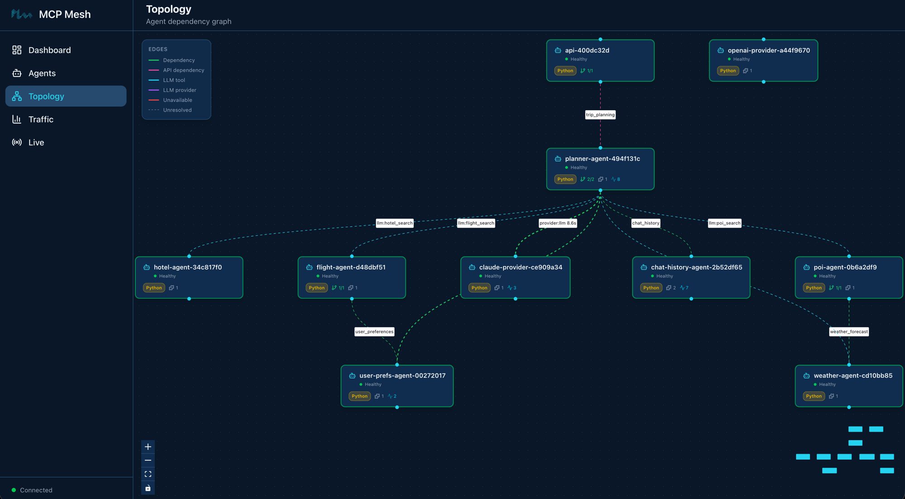
Turn 1 – plan a trip:
$ curl -s -X POST http://localhost:8080/plan \
-H "Content-Type: application/json" \
-H "X-Session-Id: test-session-1" \
-d '{"destination":"Kyoto","dates":"June 1-5, 2026","budget":"$2000"}'{
"result": "## Kyoto Trip Itinerary: June 1-5, 2026\n\n**Budget: $2,000**\n\n### Day 1 (June 1) - Arrival & Eastern Kyoto\n\n**Morning:**\n- Arrive via SQ017 ($901) — preferred airline per your preferences\n- Check into Sakura Inn ($95/night, 3-star) — meets your minimum star rating\n\n**Afternoon:**\n- Visit Fushimi Inari Shrine (cultural — matches your interests)\n...",
"session_id": "test-session-1"
}Turn 2 – iterate on the plan:
$ curl -s -X POST http://localhost:8080/plan \
-H "Content-Type: application/json" \
-H "X-Session-Id: test-session-1" \
-d '{"destination":"Kyoto","dates":"June 1-5, 2026","budget":"$1500","message":"Can you make it cheaper? I want to stay under $1500."}'{
"result": "## Revised Kyoto Itinerary: June 1-5, 2026\n\n**Budget: $1,500** (revised from $2,000)\n\n### Changes from Previous Plan\n- Switched to MH007 ($842, saving $59) — still a preferred airline\n- Downgraded to Capsule Stay ($45/night, saving $200 over 4 nights)\n- Replaced paid attractions with free alternatives\n\n### Day 1 (June 1) - Arrival\n...",
"session_id": "test-session-1"
}The second response references the first plan – it knows about the previous hotel choice, the original budget, and the itinerary structure. This is the conversation history at work: the planner fetched the prior turns from Redis, passed them to the LLM as a multi-turn message list, and the LLM responded with awareness of the full dialogue.
Turn 3 – ask a question:
$ curl -s -X POST http://localhost:8080/plan \
-H "Content-Type: application/json" \
-H "X-Session-Id: test-session-1" \
-d '{"destination":"Kyoto","dates":"June 1-5, 2026","budget":"$1500","message":"What if I skip the flight and take the Shinkansen from Tokyo instead?"}'The planner sees all three turns and adjusts accordingly. Each turn adds to the Redis list, and the next request reads the full history.
Open the mesh UI to view the trace:
$ meshctl start --ui -dNavigate to http://localhost:3080 and click the most
recent trace. The call tree shows the planner’s orchestration – history
fetch and save happen inside the planner, not the gateway:
└─ plan_trip (planner-agent) [18542ms] ✓
├─ get_history (chat-history-agent) [2ms] ✓
├─ get_user_prefs (user-prefs-agent) [1ms] ✓
├─ claude_provider (claude-provider) [18451ms] ✓
│ ├─ flight_search (flight-agent) [14ms] ✓
│ │ └─ get_user_prefs (user-prefs-agent) [0ms] ✓
│ ├─ hotel_search (hotel-agent) [1ms] ✓
│ ├─ get_weather (weather-agent) [0ms] ✓
│ └─ search_pois (poi-agent) [21ms] ✓
│ └─ get_weather (weather-agent) [0ms] ✓
├─ save_turn (chat-history-agent) [1ms] ✓
└─ save_turn (chat-history-agent) [1ms] ✓The flow reads top to bottom: fetch history (2ms), prefetch user preferences (1ms), run the LLM (18s, most of which is the LLM reasoning loop), save the user message (1ms), save the assistant response (1ms). The chat history calls add negligible overhead – Redis round-trips are sub-millisecond.
!!! note “Stateful concerns are just agents” Redis-backed chat history, user profiles, booking state, audit logs – they are all the same pattern: a mesh tool agent wrapping a data store. mesh does not need a special primitive for each one. The general abstraction – any MCP tool anywhere is a local function call – handles them all. Want to swap Redis for Postgres? Edit one agent. Want to add message encryption? Extend one agent. The gateway and planner do not change.
Your ten agents are running in watch mode. On Day 7 you will add a committee of specialists. No need to stop between chapters.
Redis connection refused. The chat-history-agent
connects to Redis on localhost:6379. Make sure the
observability stack is running:
$ docker compose -f docker-compose.observability.yml up -dCheck Redis is healthy:
$ docker compose -f docker-compose.observability.yml ps redisHistory not persisting across calls. Verify you are
sending the same X-Session-Id header in both requests. If
the header is missing, the gateway generates a new UUID for each call –
each turn gets its own session with no shared history. Check the
session_id field in the response.
Second turn does not reference the first. Three things to check:
chat_history dependency resolved:
meshctl list should show the planner with 2/2
deps.redis-cli LRANGE chat:test-session-1 0 -1 should show the
saved JSON.get_history returning a non-empty list. If the planner’s
max_iterations is too low, the LLM may not fully process
the history before hitting the iteration cap.ModuleNotFoundError: No module named ‘redis’.
Install redis-py in your venv:
$ pip install redisYou added multi-turn chat history to the trip planner by building one
new agent and updating two existing ones. The chat-history-agent wraps
Redis with two tools (save_turn, get_history).
The planner owns the full chat lifecycle – it fetches history before the
LLM call and saves turns after. The gateway stays thin: one dependency,
session ID passthrough. No framework changes, no special chat primitives
– just another mesh tool agent wired through dependency injection.
meshctl man decorators – the @mesh.tool
and @mesh.route decorator referencemeshctl man dependency-injection – how DI resolves
multi-tool capabilitiesmeshctl man llm – multi-turn message format for
llm() callsDay 7 adds a committee of specialists – three LLM agents (budget analyst, adventure advisor, logistics planner) that the planner consults in parallel before producing the final itinerary.
Your planner generates solid itineraries, but a single LLM perspective has blind spots. A budget-conscious traveler needs cost analysis. An adventurous one needs hidden gems. Everyone needs logistics that actually work. Today you add three specialist agents – each with its own expertise – and have the planner consult all of them before producing the final plan.
graph LR
U[User] -->|"POST /plan"| GW[gateway]
GW -->|"trip_planning"| PL[planner-agent]
PL ==>|tier-1| CH[chat-history-agent]
PL -->|"+claude"| CP[claude-provider]
PL -.->|failover| OP[openai-provider]
PL ==>|tier-1| UPA[user-prefs-agent]
PL ==>|fan-out| BA[budget-analyst]
PL ==>|fan-out| AA[adventure-advisor]
PL ==>|fan-out| LP[logistics-planner]
BA -->|llm| CP
AA -->|llm| CP
LP -->|llm| CP
CP -.->|tier-2| FA[flight-agent]
CP -.->|tier-2| HA[hotel-agent]
CP -.->|tier-2| WA[weather-agent]
CP -.->|tier-2| PA[poi-agent]
FA -->|depends on| UPA
PA -->|depends on| WA
style U fill:#555,color:#fff
style GW fill:#e67e22,color:#fff
style CH fill:#1abc9c,color:#fff
style PL fill:#9b59b6,color:#fff
style CP fill:#9b59b6,color:#fff
style OP fill:#9b59b6,color:#fff
style BA fill:#f39c12,color:#fff
style AA fill:#f39c12,color:#fff
style LP fill:#f39c12,color:#fff
style FA fill:#4a9eff,color:#fff
style PA fill:#4a9eff,color:#fff
style UPA fill:#1a8a4a,color:#fff
style WA fill:#1a8a4a,color:#fff
style HA fill:#1a8a4a,color:#fffThirteen agents. Everything from Day 6 plus three specialists in gold. The planner generates a base itinerary, then fans out to three specialist LLM agents in parallel. Each specialist returns structured data – a Pydantic model – which the planner synthesizes into the final response.
Today has five parts:
@mesh.llm agentsWhen an @mesh.llm function returns str, the
LLM’s text response passes through as-is. When it returns a Pydantic
BaseModel, mesh instructs the LLM to produce JSON matching
the schema and validates the response automatically. No special
parameter needed – the return type annotation controls format.
Here is the budget specialist’s output model:
> *See the source code in the day's example directory.*The BudgetAnalysis model has three fields:
total_estimated (an integer), savings_tips (a
list of strings), and budget_breakdown (a list of
BudgetItem sub-models with per-category costs). When the
LLM returns, mesh validates the response against this schema. If the LLM
produces invalid JSON, mesh retries automatically.
!!! tip “Use typed models, not dict” Define typed Pydantic sub-models
(like BudgetItem) instead of bare dict for
list fields. Typed models produce explicit JSON schemas that work across
all LLM providers – Claude, GPT, Gemini – without schema compatibility
issues. If you use list[dict], some providers may reject
the schema or return unpredictable field names. Typed models also give
the LLM a clearer contract, producing more consistent results.
The same pattern applies to the other two specialists. Each defines its own Pydantic model with fields specific to its domain.
Scaffold the agent:
$ meshctl scaffold --name budget-analyst --agent-type llm-agent --port 9110Created agent 'budget-analyst' in budget-analyst/
Generated files:
budget-analyst/
├── .dockerignore
├── Dockerfile
├── README.md
├── __init__.py
├── __main__.py
├── helm-values.yaml
├── main.py
├── prompts/
│ └── budget-analyst.jinja2
└── requirements.txtReplace main.py with:
> *See the source code in the day's example directory.*The function takes destination,
plan_summary, and budget as input. It calls
the LLM with a single prompt, and the return type
BudgetAnalysis tells mesh to validate the response as
structured JSON. The max_iterations=1 setting means no tool
loop – the specialist makes one LLM call and returns.
Replace the prompt template at
prompts/budget_analysis.j2:
> *See the source code in the day's example directory.*Scaffold:
$ meshctl scaffold --name adventure-advisor --agent-type llm-agent --port 9111Replace main.py:
> *See the source code in the day's example directory.*The AdventureAdvice model returns
unique_experiences (a list of Experience
sub-models with name, description, and why_special),
local_gems (list of strings), and
off_beaten_path (a paragraph of text).
Replace the prompt at prompts/adventure_advice.j2:
> *See the source code in the day's example directory.*Scaffold:
$ meshctl scaffold --name logistics-planner --agent-type llm-agent --port 9112Replace main.py:
> *See the source code in the day's example directory.*The LogisticsPlan model returns
daily_schedule, transit_tips, and
time_optimization. Each specialist follows the same
pattern: define a Pydantic model, write a Jinja prompt, return the model
type from the function.
Replace the prompt at prompts/logistics_plan.j2:
> *See the source code in the day's example directory.*The planner needs two changes: declare the specialist capabilities as dependencies, and fan out to them after generating the base plan.
The @mesh.tool decorator now lists four dependencies
instead of one:
> *See the source code in the day's example directory.*Mesh resolves each capability to an McpMeshTool proxy.
The planner function signature gains three new parameters –
budget_analyst, adventure_advisor, and
logistics_planner – each injected automatically by
mesh.
After the LLM generates a base plan, the planner calls all three specialists in parallel:
> *See the source code in the day's example directory.*Each specialist receives the destination and the base plan summary.
The planner waits for all three to complete, then appends their insights
to the response. Because each specialist is an independent LLM call with
max_iterations=1, they run concurrently without
interference.
Here is the complete updated main.py:
> *See the source code in the day's example directory.*The planner’s description changes to reflect its new role as coordinator. The core LLM call is unchanged – it still generates the base itinerary using flight, hotel, weather, and POI data. The committee adds depth without replacing the original planning logic.
Your ten agents from Day 6 should still be running. Add the three specialists:
$ meshctl start --dte --debug -d -w \
budget-analyst/main.py \
adventure-advisor/main.py \
logistics-planner/main.pyIf you are starting fresh, launch everything at once:
$ meshctl start --dte --debug -d -w \
budget-analyst/main.py \
adventure-advisor/main.py \
logistics-planner/main.py \
claude-provider/main.py \
openai-provider/main.py \
flight-agent/main.py \
hotel-agent/main.py \
weather-agent/main.py \
poi-agent/main.py \
user-prefs-agent/main.py \
chat-history-agent/main.py \
planner-agent/main.py \
gateway/main.pyCheck the mesh:
$ meshctl listRegistry: running (http://localhost:8000) - 13 healthy
NAME RUNTIME TYPE STATUS DEPS ENDPOINT AGE LAST SEEN
adventure-advisor-7c4e2f1a Python Agent healthy 0/0 10.0.0.74:9111 8s 2s
budget-analyst-5a1d3b8e Python Agent healthy 0/0 10.0.0.74:9110 8s 2s
chat-history-agent-3f2a1b9c Python Agent healthy 0/0 10.0.0.74:9109 20m 2s
claude-provider-0a89e8c6 Python Agent healthy 0/0 10.0.0.74:49486 35m 2s
flight-agent-a939da4b Python Agent healthy 1/1 10.0.0.74:49480 35m 2s
gateway-7b3f2e91 Python API healthy 1/1 10.0.0.74:8080 25m 2s
hotel-agent-9932ac09 Python Agent healthy 0/0 10.0.0.74:49482 35m 2s
logistics-planner-9f6b4d2c Python Agent healthy 0/0 10.0.0.74:9112 8s 2s
openai-provider-40a5c637 Python Agent healthy 0/0 10.0.0.74:49485 35m 2s
planner-agent-fb07b918 Python Agent healthy 5/5 10.0.0.74:49484 35m 2s
poi-agent-97bd9fcc Python Agent healthy 1/1 10.0.0.74:49481 35m 2s
user-prefs-agent-87506c4a Python Agent healthy 0/0 10.0.0.74:49479 35m 2s
weather-agent-a6f7ea5e Python Agent healthy 0/0 10.0.0.74:49483 35m 2sThirteen agents. The planner now shows 5/5 dependencies
– user_preferences, chat_history, plus the
three specialist capabilities.
List the tools:
$ meshctl list --toolsTOOL AGENT CAPABILITY TAGS
-----------------------------------------------------------------------------------------------
adventure_advice adventure-advisor-7c4e2f1a adventure_advice specialist,adventure,llm
budget_analysis budget-analyst-5a1d3b8e budget_analysis specialist,budget,llm
claude_provider claude-provider-0a89e8c6 llm claude
flight_search flight-agent-a939da4b flight_search flights,travel
get_history chat-history-agent-3f2a1b9c chat_history chat,history,state
get_user_prefs user-prefs-agent-87506c4a user_preferences preferences,travel
get_weather weather-agent-a6f7ea5e weather_forecast weather,travel
hotel_search hotel-agent-9932ac09 hotel_search hotels,travel
logistics_planning logistics-planner-9f6b4d2c logistics_planning specialist,logistics,llm
openai_provider openai-provider-40a5c637 llm openai,gpt
plan_trip planner-agent-fb07b918 trip_planning planner,travel,llm
save_turn chat-history-agent-3f2a1b9c chat_history chat,history,state
search_pois poi-agent-97bd9fcc poi_search poi,travel
13 tool(s) foundThree new specialist tools: budget_analysis,
adventure_advice, and logistics_planning.
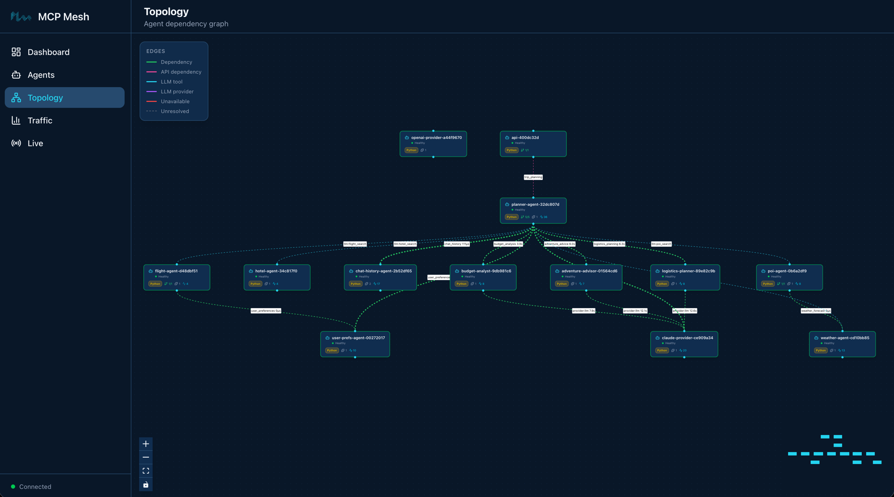
$ curl -s -X POST http://localhost:8080/plan \
-H "Content-Type: application/json" \
-H "X-Session-Id: test-session-day7" \
-d '{"destination":"Kyoto","dates":"June 1-5, 2026","budget":"$2000"}'The response now includes the base itinerary followed by specialist insights:
{
"result": "## Kyoto Trip Itinerary: June 1-5, 2026\n\n**Budget: $2,000**\n\n### Day 1 (June 1) - Arrival & Eastern Kyoto\n...\n\n---\n## Specialist Insights\n\n### Budget Analysis\n{\"total_estimated\": 1847, \"savings_tips\": [\"Book flights 3 weeks in advance for 15% savings\", \"Use a Kyoto Bus Day Pass ($6/day) instead of taxis\", \"Eat at konbini (convenience stores) for 2 meals/day to save $30/day\"], \"budget_breakdown\": [{\"category\": \"flights\", \"amount\": 901}, {\"category\": \"hotels\", \"amount\": 380}, {\"category\": \"food\", \"amount\": 300}, {\"category\": \"activities\", \"amount\": 150}, {\"category\": \"transport\", \"amount\": 116}]}\n\n### Adventure Recommendations\n{\"unique_experiences\": [{\"name\": \"Fushimi Inari at dawn\", \"description\": \"Hike the thousand torii gates before 6am when the shrine is empty\", \"why_special\": \"Most tourists arrive after 9am — the early morning light through the gates is unforgettable\"}, ...], \"local_gems\": [\"Nishiki Market back alleys\", \"Philosopher's Path at sunset\", \"Tofuku-ji moss garden\"], \"off_beaten_path\": \"Skip the tourist-heavy Arashiyama bamboo grove midday. Instead, rent a bicycle and ride along the Kamo River to the northern temples...\"}\n\n### Logistics Plan\n{\"daily_schedule\": [{\"day\": 1, \"activities\": [{\"time\": \"14:00\", \"activity\": \"Arrive KIX\", \"transit\": \"Haruka Express to Kyoto Station (75 min, ¥3,430)\"}]}, ...], \"transit_tips\": [\"Buy an ICOCA card at the airport for all local transit\", \"Kyoto Bus Day Pass (¥700) covers most tourist routes\", \"Walk between eastern Higashiyama temples — they are within 15 minutes of each other\"], \"time_optimization\": \"Group attractions by neighborhood to minimize transit. Eastern Kyoto (Kiyomizu, Gion, Philosopher's Path) in one day, western Kyoto (Arashiyama, Kinkaku-ji) in another.\"}",
"session_id": "test-session-day7"
}The base plan covers flights, hotels, and a day-by-day itinerary. Below the separator, three specialist sections provide targeted insights: a cost breakdown with savings tips, adventure recommendations with hidden gems, and a logistics plan with transit details. Each section is structured JSON that your frontend can parse and display however you like.
Open the mesh UI:
$ meshctl start --ui -dNavigate to http://localhost:3080 and click the most
recent trace. The call tree shows the fan-out pattern:
└─ plan_trip (planner-agent) [42871ms] ✓
├─ get_history (chat-history-agent) [2ms] ✓
├─ get_user_prefs (user-prefs-agent) [1ms] ✓
├─ claude_provider (claude-provider) [18451ms] ✓
│ ├─ flight_search (flight-agent) [14ms] ✓
│ │ └─ get_user_prefs (user-prefs-agent) [0ms] ✓
│ ├─ hotel_search (hotel-agent) [1ms] ✓
│ ├─ get_weather (weather-agent) [0ms] ✓
│ └─ search_pois (poi-agent) [21ms] ✓
│ └─ get_weather (weather-agent) [0ms] ✓
├─ budget_analysis (budget-analyst) [8204ms] ✓ ← parallel
├─ adventure_advice (adventure-advisor) [7891ms] ✓ ← parallel
├─ logistics_planning (logistics-planner) [8102ms] ✓ ← parallel
├─ save_turn (chat-history-agent) [1ms] ✓
└─ save_turn (chat-history-agent) [1ms] ✓The planner first generates the base plan (18s via Claude with tool
calls), then fans out to the three specialists in parallel (~8s each,
overlapping). Total wall-clock time for the specialists is about 8
seconds, not 24 – they run concurrently via asyncio.gather.
Each specialist makes its own LLM call through the shared
claude-provider.
!!! note “Structured outputs are validated at the edge” Each specialist’s Pydantic model acts as a contract. If a specialist’s LLM response does not match the schema, mesh retries the call automatically. The planner receives validated data every time – no defensive parsing needed. This is especially useful when specialists are developed by different teams: the model definition is the API contract.
$ meshctl stopOn Day 8 you’ll containerize the entire mesh with Docker Compose — local agents need to stop so Docker can use the same ports.
Specialist dependency not resolved. The planner
shows 3/4 or fewer deps in meshctl list. Make
sure all three specialist agents started successfully:
$ meshctl list | grep -E 'budget|adventure|logistics'If a specialist is missing, check its logs:
$ meshctl logs budget-analystCommon cause: the prompt template file path is wrong. The
file:// path in @mesh.llm is relative to the
agent’s working directory. Verify the prompts/ directory
exists next to main.py.
Specialist returns raw text instead of JSON. The
Pydantic return type requires the LLM to produce valid JSON. If the LLM
ignores the schema instruction, check that max_iterations=1
is set and the prompt explicitly asks for JSON output. Mesh retries once
on validation failure, but a fundamentally broken prompt will still
fail.
asyncio.gather raises an exception from one
specialist. If one specialist fails,
asyncio.gather raises the first exception and cancels the
others. This is Python’s default behavior. For production, consider
wrapping each call in a try/except or using
asyncio.gather(*tasks, return_exceptions=True) to collect
partial results.
Timeouts on specialist calls. Each specialist makes
an LLM call. If your provider is rate-limited, three parallel calls may
hit the limit. Check your API key’s rate limits. As a fallback, you can
call specialists sequentially instead of with
asyncio.gather.
You added a committee of three specialist agents to the trip planner.
Each specialist is an independent @mesh.llm agent with a
Pydantic return type for structured output. The planner declares them as
dependencies, calls them in parallel with asyncio.gather,
and synthesizes their insights into the final response. No framework
changes needed – the same dependency injection and LLM patterns you
learned on Day 3 scale to multi-agent fan-out.
meshctl man decorators – the @mesh.tool
and @mesh.llm decorator referencemeshctl man structured-output – Pydantic return types
and JSON validationmeshctl man dependency-injection – how DI resolves
multi-capability dependenciesDay 8 containerizes the mesh – all thirteen agents in a single Docker Compose file with health checks and log aggregation.
Until now you have been running agents individually with
meshctl start. That is great for development – watch mode,
instant restarts, granular control. But for integration testing and demo
environments, you want one command that brings up the entire mesh. Today
you will generate a Docker Compose file from your agent code and start
everything with docker compose up.
graph TB
subgraph compose["docker compose up -d"]
direction TB
subgraph infra["Infrastructure"]
PG[(postgres)]
REG[registry :8000]
UI[mesh-ui :3080]
end
subgraph obs["Observability"]
RD[(redis)]
TM[tempo]
GR[grafana :3000]
end
subgraph agents["13 Agents"]
GW[gateway :8080]
CH[chat-history]
PL[planner]
CP[claude-provider]
OP[openai-provider]
FA[flight-agent]
HA[hotel-agent]
WA[weather-agent]
PA[poi-agent]
UP[user-prefs]
BA[budget-analyst]
AA[adventure-advisor]
LP[logistics-planner]
end
end
U[User] -->|"POST /plan"| GW
U -->|"browse"| UI
style U fill:#555,color:#fff
style compose fill:#1a1a2e,color:#fff,stroke:#4a9eff
style infra fill:#2d2d44,color:#fff,stroke:#666
style obs fill:#2d2d44,color:#fff,stroke:#666
style agents fill:#2d2d44,color:#fff,stroke:#666
style GW fill:#e67e22,color:#fff
style REG fill:#1abc9c,color:#fff
style UI fill:#1abc9c,color:#fff
style PG fill:#336791,color:#fff
style RD fill:#d63031,color:#fff
style TM fill:#f39c12,color:#fff
style GR fill:#f39c12,color:#fff
style PL fill:#9b59b6,color:#fff
style CP fill:#9b59b6,color:#fff
style OP fill:#9b59b6,color:#fff
style BA fill:#f39c12,color:#fff
style AA fill:#f39c12,color:#fff
style LP fill:#f39c12,color:#fff
style FA fill:#4a9eff,color:#fff
style PA fill:#4a9eff,color:#fff
style UP fill:#1a8a4a,color:#fff
style WA fill:#1a8a4a,color:#fff
style HA fill:#1a8a4a,color:#fff
style CH fill:#1abc9c,color:#fffOne Docker Compose file. Thirteen agents, a registry, a database, the Mesh UI dashboard, and a full observability stack. Everything starts with a single command. Everything stops with a single command.
Today has five parts:
meshctl scaffold --compose --observabilitydocker compose up -dmeshctl list, curl the
gateway, check healthlocalhost:3080docker compose downDay 7 stopped your local agents. If any are still running:
$ meshctl stopCreate the Day 8 working directory with all thirteen agents:
$ mkdir -p trip-planner/day-08
$ cp -r day-07/* day-08/
$ cd day-08$ meshctl scaffold --compose --observabilityScanning for agents...
Found 12 agent(s):
- adventure-advisor (port 9111) in adventure-advisor/
- budget-analyst (port 9110) in budget-analyst/
- chat-history-agent (port 9109) in chat-history-agent/
- claude-provider (port 9106) in claude-provider/
- flight-agent (port 9101) in flight-agent/
- hotel-agent (port 9102) in hotel-agent/
- logistics-planner (port 9112) in logistics-planner/
- openai-provider (port 9108) in openai-provider/
- planner-agent (port 9107) in planner-agent/
- poi-agent (port 9104) in poi-agent/
- user-prefs-agent (port 9105) in user-prefs-agent/
- weather-agent (port 9103) in weather-agent/
Successfully generated docker-compose.yml in .
Services included:
- postgres (5432)
- registry (8000)
- redis (6379)
- tempo (3200, 4317)
- grafana (3000)
- adventure-advisor (9111)
- budget-analyst (9110)
- chat-history-agent (9109)
- claude-provider (9106)
- flight-agent (9101)
- hotel-agent (9102)
- logistics-planner (9112)
- openai-provider (9108)
- planner-agent (9107)
- poi-agent (9104)
- user-prefs-agent (9105)
- weather-agent (9103)The scaffold scanned every subdirectory, found
@mesh.agent decorators in twelve Python files, extracted
each agent’s name and port, and generated a complete
docker-compose.yml with infrastructure services, health
checks, and networking.
It also generated observability configuration files:
.
├── docker-compose.yml
├── tempo.yaml
└── grafana/
├── grafana.ini
├── dashboards/
│ └── mcp-mesh-overview.json
└── provisioning/
├── dashboards/dashboards.yaml
└── datasources/datasources.yamlThe scaffold detected twelve agents, not thirteen. The gateway uses
@mesh.route on a FastAPI app – it is not a
@mesh.agent class. The scaffold looks for
@mesh.agent decorators to auto-detect agents, so the
gateway needs to be added manually.
Add the gateway service to docker-compose.yml:
> *See the source code in the day's example directory.*The scaffold does not include the Mesh UI dashboard. Add it after the registry service:
> *See the source code in the day's example directory.*The LLM providers need API keys. The scaffold does not know about your environment variables, so add them to the claude-provider and openai-provider services:
# In the claude-provider service environment:
ANTHROPIC_API_KEY: ${ANTHROPIC_API_KEY}
# In the openai-provider service environment:
OPENAI_API_KEY: ${OPENAI_API_KEY}Make sure these variables are set in your shell or in a
.env file next to docker-compose.yml.
!!! tip “meshctl DX” The compose file was generated from your agent
code. You did not write it. When you add a new agent, re-run
meshctl scaffold --compose and the compose file updates
automatically. The scaffold merges new agents into the existing file
without overwriting your manual additions like the gateway and API
keys.
$ docker compose up -dDocker pulls the images (first run only), starts the infrastructure, waits for health checks, and then starts all agents. The dependency ordering ensures postgres and redis are healthy before the registry starts, and the registry is healthy before agents start registering.
$ docker compose psNAME STATUS PORTS
trip-planner-postgres Up (healthy) 0.0.0.0:5432->5432/tcp
trip-planner-redis Up (healthy) 0.0.0.0:6379->6379/tcp
trip-planner-tempo Up (healthy) 0.0.0.0:3200->3200/tcp, 0.0.0.0:4317->4317/tcp
trip-planner-grafana Up (healthy) 0.0.0.0:3000->3000/tcp
trip-planner-registry Up (healthy) 0.0.0.0:8000->8000/tcp
trip-planner-mesh-ui Up (healthy) 0.0.0.0:3080->3080/tcp
trip-planner-gateway Up (healthy) 0.0.0.0:8080->8080/tcp
trip-planner-flight-agent Up (healthy) 0.0.0.0:9101->9101/tcp
trip-planner-hotel-agent Up (healthy) 0.0.0.0:9102->9102/tcp
trip-planner-weather-agent Up (healthy) 0.0.0.0:9103->9103/tcp
trip-planner-poi-agent Up (healthy) 0.0.0.0:9104->9104/tcp
trip-planner-user-prefs-agent Up (healthy) 0.0.0.0:9105->9105/tcp
trip-planner-claude-provider Up (healthy) 0.0.0.0:9106->9106/tcp
trip-planner-planner-agent Up (healthy) 0.0.0.0:9107->9107/tcp
trip-planner-openai-provider Up (healthy) 0.0.0.0:9108->9108/tcp
trip-planner-chat-history-agent Up (healthy) 0.0.0.0:9109->9109/tcp
trip-planner-budget-analyst Up (healthy) 0.0.0.0:9110->9110/tcp
trip-planner-adventure-advisor Up (healthy) 0.0.0.0:9111->9111/tcp
trip-planner-logistics-planner Up (healthy) 0.0.0.0:9112->9112/tcpAll nineteen services running. Five infrastructure, one UI, thirteen agents.
$ docker compose logs -f --tail=20Press ++ctrl+c++ to stop following. To view a single agent’s logs:
$ docker compose logs flight-agentThe registry is accessible at localhost:8000, the same
address meshctl uses by default:
$ meshctl listAll thirteen agents should appear with their tools and dependencies
resolved. The output is the same as when you ran them locally –
meshctl does not know or care whether agents are running as
local processes or containers.
$ curl -s -X POST http://localhost:8080/plan \
-H "Content-Type: application/json" \
-H "X-Session-Id: compose-test-1" \
-d '{"destination":"Kyoto","dates":"June 1-5, 2026","budget":"$2000"}' \
| python -m json.toolThe response includes the full trip plan with specialist insights – budget analysis, adventure recommendations, and logistics planning. The same functionality as Day 7, now running entirely in containers.
$ meshctl trace --lastThe trace shows the full call tree from the gateway through the planner to all tool agents – the same distributed trace pipeline from Day 3, now flowing through containerized agents.
Open http://localhost:3080 in your browser.
The main page shows an overview of your mesh: agent count, health status, and a traffic summary table. Real-time events stream in the sidebar – you will see agent registrations from the initial startup.
Click Topology in the sidebar. The topology view renders the full agent dependency graph. Nodes represent agents, edges represent dependencies. Color coding shows agent types:
Hover over any node for details – runtime, version, capabilities, and endpoint.
Click Traffic to see inter-agent call metrics. The top cards show aggregate stats: total calls, success rate, token usage, and data transferred. Below that, per-edge breakdowns show every agent-to-agent route with call counts, latency, and error rates.
After making a few /plan calls, you will see traffic
flowing from the gateway through the planner to the LLM providers and
tool agents.
Click Live for real-time trace streaming. Make
another /plan call and watch the spans appear in real time
– which agent called which tool, on which target, with timing and
status. Each trace can be expanded to see individual spans across the
mesh.
Click Agents for a table of all registered agents. Each row shows name, type, runtime, version, dependency resolution status, and last seen time. Expand any row to see its capabilities, dependencies, and recent traces.
$ docker compose downThis stops all containers and removes the network. Data volumes
persist so the next docker compose up -d starts faster. To
remove volumes too:
$ docker compose down -vDocker build fails with missing requirements. The
compose file uses mcpmesh/python-runtime:1.3.3 images with
a dev-mode entrypoint that installs requirements.txt on
startup. If an agent has dependencies not in the base image, check that
requirements.txt exists in the agent directory and lists
all dependencies.
Agent cannot connect to registry. Check that the
agent’s MCP_MESH_REGISTRY_URL environment variable is set
to http://registry:8000 (using the Docker service hostname,
not localhost). Run
docker compose logs <agent-name> to see connection
errors.
Port conflict on startup. If you see “port is
already allocated”, another process is using that port on your host.
Either stop the conflicting process or change the host port mapping in
docker-compose.yml. For example, change
"8000:8000" to "8001:8000" to map the registry
to port 8001 on your host.
Duplicate agent ports. If any two agents share the
same http_port, Docker Compose will fail to start them –
they’d bind to the same host port. Check your main.py
files: each agent should have a unique port. If you used
--port when scaffolding (as shown in earlier chapters),
you’re already set.
API keys not passed to containers. LLM providers
need ANTHROPIC_API_KEY and OPENAI_API_KEY.
These must be set in your shell environment or in a .env
file next to docker-compose.yml:
# .env
ANTHROPIC_API_KEY=sk-ant-...
OPENAI_API_KEY=sk-...Docker Compose automatically reads .env files.
Mesh UI not loading at localhost:3080. Verify the
mesh-ui container is running: docker compose ps mesh-ui.
Check its logs: docker compose logs mesh-ui. The UI needs
the registry to be healthy before it starts.
You generated a Docker Compose file from your agent code with a
single command. The scaffold detected twelve agents, extracted their
names and ports, and produced a complete compose file with
infrastructure, health checks, and observability. You added the gateway
and Mesh UI manually, started everything with
docker compose up -d, and verified the mesh works
identically to the local setup. The Mesh UI dashboard gave you real-time
visibility into agent topology, traffic, and traces.
meshctl man deployment – local, Docker, and Kubernetes
deployment patternsmeshctl scaffold --compose --help – all scaffold
compose flagsDay 9 takes the mesh to Kubernetes with Helm charts.
Your trip planner runs in Docker Compose. Today you deploy it to
Kubernetes – the same agents, the same code, the same mesh. The only new
file per agent is a Helm values file, and meshctl scaffold
already created that on Day 1.
graph TB
subgraph k8s["Kubernetes — trip-planner namespace"]
direction TB
subgraph core["mcp-mesh-core (Helm)"]
PG[(postgres)]
REG[registry :8000]
RD[(redis)]
TM[tempo]
GR[grafana :3000]
end
subgraph agents["13 Agents (Helm)"]
GW[gateway :8080]
CH[chat-history]
PL[planner]
CP[claude-provider]
OP[openai-provider]
FA[flight-agent]
HA[hotel-agent]
WA[weather-agent]
PA[poi-agent]
UP[user-prefs]
BA[budget-analyst]
AA[adventure-advisor]
LP[logistics-planner]
end
end
U[User] -->|"port-forward\nor ingress"| GW
style U fill:#555,color:#fff
style k8s fill:#1a1a2e,color:#fff,stroke:#4a9eff
style core fill:#2d2d44,color:#fff,stroke:#666
style agents fill:#2d2d44,color:#fff,stroke:#666
style GW fill:#e67e22,color:#fff
style REG fill:#1abc9c,color:#fff
style PG fill:#336791,color:#fff
style RD fill:#d63031,color:#fff
style TM fill:#f39c12,color:#fff
style GR fill:#f39c12,color:#fff
style PL fill:#9b59b6,color:#fff
style CP fill:#9b59b6,color:#fff
style OP fill:#9b59b6,color:#fff
style BA fill:#f39c12,color:#fff
style AA fill:#f39c12,color:#fff
style LP fill:#f39c12,color:#fff
style FA fill:#4a9eff,color:#fff
style PA fill:#4a9eff,color:#fff
style UP fill:#1a8a4a,color:#fff
style WA fill:#1a8a4a,color:#fff
style HA fill:#1a8a4a,color:#fff
style CH fill:#1abc9c,color:#fffOne namespace. Two Helm charts (mcp-mesh-core for
infrastructure, mcp-mesh-agent for each agent). Thirteen
agents, a registry, a database, and a full observability stack. Same
agents as Day 8 – running in Kubernetes pods instead of Docker
containers.
Today has five parts:
helm install mcp-corehelm install
per agentkubectl get pods,
meshctl list, curl the gatewayOpen your Day 8 flight agent and your Day 9 flight agent side by side.
$ diff day-08/python/flight-agent/main.py day-09/python/flight-agent/main.py80c80
< description="TripPlanner flight search tool -- Day 8",
---
> description="TripPlanner flight search tool -- Day 9",One line changed: the description string. The
flight_search function – its parameters, its return type,
its stub data – is identical. The imports are identical. The decorators
are identical. The function you wrote on Day 1 and evolved through Day 8
runs on Kubernetes without a single code change.
Remember that helm-values.yaml file from Day 1 that you
ignored?
> *See the source code in the day's example directory.*That is the Kubernetes deployment manifest for your flight agent. The scaffold generated it on Day 1. It tells the Helm chart which image to pull, what to name the agent, and how many resources to give it. The chart handles the rest: Deployment, Service, health probes, environment variables, service account.
No env-specific config files. No sidecars. No wrapper code. The function you wrote on Day 1 runs here.
kubectl configured for your clusterFor minikube, use minikube’s Docker daemon so images are available locally without pushing to a registry:
$ eval $(minikube docker-env)Each agent has a Dockerfile (generated by
meshctl scaffold) that uses the official
mcpmesh/python-runtime base image. Build all thirteen
agents:
$ cd day-09/python
$ for agent in flight-agent hotel-agent weather-agent poi-agent \
user-prefs-agent chat-history-agent claude-provider openai-provider \
planner-agent gateway budget-analyst adventure-advisor logistics-planner
do
echo "Building $agent..."
docker build -t "trip-planner/${agent}:latest" "$agent/"
doneVerify the images are available:
$ docker images --filter "reference=trip-planner/*" --format "table {{.Repository}}\t{{.Tag}}\t{{.Size}}"REPOSITORY TAG SIZE
trip-planner/flight-agent latest 409MB
trip-planner/hotel-agent latest 409MB
trip-planner/weather-agent latest 409MB
trip-planner/poi-agent latest 409MB
trip-planner/user-prefs-agent latest 409MB
trip-planner/chat-history-agent latest 409MB
trip-planner/claude-provider latest 409MB
trip-planner/openai-provider latest 409MB
trip-planner/planner-agent latest 409MB
trip-planner/gateway latest 409MB
trip-planner/budget-analyst latest 409MB
trip-planner/adventure-advisor latest 409MB
trip-planner/logistics-planner latest 409MB!!! tip “Cloud clusters” For EKS, GKE, or AKS, push images to your
container registry instead:
shell docker buildx build --platform linux/amd64 \ -t your-registry/flight-agent:v1.0.0 --push flight-agent/
Then update image.repository in each values file.
$ kubectl create namespace trip-plannernamespace/trip-planner createdLLM agents need API keys. Create a Kubernetes Secret:
$ kubectl -n trip-planner create secret generic llm-keys \
--from-literal=ANTHROPIC_API_KEY=$ANTHROPIC_API_KEY \
--from-literal=OPENAI_API_KEY=$OPENAI_API_KEYsecret/llm-keys createdThe Helm values files for LLM agents reference this secret by name:
> *See the source code in the day's example directory.*The secretKeyRef mounts the key as an environment
variable inside the pod. The agent code reads
ANTHROPIC_API_KEY from the environment – the same way it
did locally. No code change needed.
The mcp-mesh-core chart deploys the registry,
PostgreSQL, Redis, Tempo, and Grafana as a single Helm release:
$ helm install mcp-core oci://ghcr.io/dhyansraj/mcp-mesh/mcp-mesh-core \
--version 1.3.3 \
-n trip-planner \
-f helm/values-core.yaml \
--wait --timeout 5mWait for the registry to become available:
$ kubectl wait --for=condition=available \
deployment/mcp-core-mcp-mesh-registry \
-n trip-planner --timeout=120sdeployment.apps/mcp-core-mcp-mesh-registry condition metEach agent gets its own helm install using the
mcp-mesh-agent chart and the values file from
helm/:
$ AGENTS=(
flight-agent hotel-agent weather-agent poi-agent user-prefs-agent
chat-history-agent claude-provider openai-provider planner-agent
gateway budget-analyst adventure-advisor logistics-planner
)
$ for agent in "${AGENTS[@]}"; do
echo "Installing $agent..."
helm install "$agent" \
oci://ghcr.io/dhyansraj/mcp-mesh/mcp-mesh-agent \
--version 1.3.3 \
-n trip-planner \
-f "helm/values-${agent}.yaml"
doneInstalling flight-agent...
Installing hotel-agent...
Installing weather-agent...
Installing poi-agent...
Installing user-prefs-agent...
Installing chat-history-agent...
Installing claude-provider...
Installing openai-provider...
Installing planner-agent...
Installing gateway...
Installing budget-analyst...
Installing adventure-advisor...
Installing logistics-planner...!!! tip “minikube image pull” If you built images with
eval $(minikube docker-env), add
--set image.pullPolicy=Never to each
helm install so Kubernetes uses the local images instead of
trying to pull from a registry.
On Day 8, each agent had a unique port (9101,
9102, …) because all containers shared the host network. In
Kubernetes, each pod has its own IP address, so every agent listens on
port 8080. The Helm chart sets
MCP_MESH_HTTP_PORT=8080 as an environment variable, which
overrides the http_port in the @mesh.agent
decorator. Your code does not change.
$ kubectl -n trip-planner get podsNAME READY STATUS AGE
adventure-advisor-mcp-mesh-agent-b5fcb5d9-tw48r 1/1 Running 30s
budget-analyst-mcp-mesh-agent-6cdfc8c5c5-bmr9d 1/1 Running 30s
chat-history-agent-mcp-mesh-agent-57b497ffc9-6dgd4 1/1 Running 30s
claude-provider-mcp-mesh-agent-55756498b9-9sndc 1/1 Running 30s
flight-agent-mcp-mesh-agent-5df865b559-jc6cx 1/1 Running 30s
gateway-mcp-mesh-agent-79cbcf7d88-wxng4 1/1 Running 30s
hotel-agent-mcp-mesh-agent-94d8f8b8-dnfh8 1/1 Running 30s
logistics-planner-mcp-mesh-agent-5db8d9555-ndjff 1/1 Running 30s
mcp-core-mcp-mesh-grafana-6d7b9f68d6-rhbqx 1/1 Running 6m
mcp-core-mcp-mesh-postgres-0 1/1 Running 6m
mcp-core-mcp-mesh-redis-7df8848cb7-bdlqs 1/1 Running 6m
mcp-core-mcp-mesh-registry-8448c85b75-4p9h7 1/1 Running 6m
mcp-core-mcp-mesh-tempo-5d8d4cbb49-gmqpd 1/1 Running 6m
openai-provider-mcp-mesh-agent-7cfd4b55bb-stqwr 1/1 Running 30s
planner-agent-mcp-mesh-agent-54876f44f4-6cp87 1/1 Running 30s
poi-agent-mcp-mesh-agent-b7fcf4864-gmslk 1/1 Running 30s
user-prefs-agent-mcp-mesh-agent-c4746c7c8-vz5bh 1/1 Running 30s
weather-agent-mcp-mesh-agent-875b6477c-wvrkv 1/1 Running 30sEighteen pods: five infrastructure, thirteen agents. All
1/1 Running.
$ kubectl -n trip-planner get svcEvery agent has a ClusterIP service on port
8080. The gateway has a NodePort service so
you can reach it from outside the cluster.
Port-forward the registry and use meshctl list:
$ kubectl -n trip-planner port-forward svc/mcp-core-mcp-mesh-registry 8000:8000 &
$ meshctl list --registry-url http://localhost:8000Registry: running (http://localhost:8000) - 13 healthy
NAME RUNTIME TYPE STATUS DEPS ENDPOINT
adventure-advisor-491aeceb Python Agent healthy 0/0 adventure-advisor-mcp-mesh-agent.trip-planner:8080
budget-analyst-bbde0bf2 Python Agent healthy 0/0 budget-analyst-mcp-mesh-agent.trip-planner:8080
chat-history-agent-e6fe4291 Python Agent healthy 0/0 chat-history-agent-mcp-mesh-agent.trip-planner:8080
claude-provider-de41d665 Python Agent healthy 0/0 claude-provider-mcp-mesh-agent.trip-planner:8080
flight-agent-b5a0bfb6 Python Agent healthy 1/1 flight-agent-mcp-mesh-agent.trip-planner:8080
gateway-api-b7080b01 Python API healthy 1/1 gateway-mcp-mesh-agent.trip-planner:8080
hotel-agent-db0a6b18 Python Agent healthy 0/0 hotel-agent-mcp-mesh-agent.trip-planner:8080
logistics-planner-5fd4a0e7 Python Agent healthy 0/0 logistics-planner-mcp-mesh-agent.trip-planner:8080
openai-provider-b32513de Python Agent healthy 0/0 openai-provider-mcp-mesh-agent.trip-planner:8080
planner-agent-9b662efc Python Agent healthy 5/5 planner-agent-mcp-mesh-agent.trip-planner:8080
poi-agent-2ccdd8e5 Python Agent healthy 1/1 poi-agent-mcp-mesh-agent.trip-planner:8080
user-prefs-agent-3bfc1af9 Python Agent healthy 0/0 user-prefs-agent-mcp-mesh-agent.trip-planner:8080
weather-agent-b8c26c65 Python Agent healthy 0/0 weather-agent-mcp-mesh-agent.trip-planner:8080Thirteen agents, all healthy. The planner resolves all five
dependencies (5/5). The gateway resolves its single
dependency (1/1). Endpoints use Kubernetes DNS names –
<service>.<namespace>:<port> – which
resolve automatically within the cluster.
Port-forward the gateway and send a request:
$ kubectl -n trip-planner port-forward svc/gateway-mcp-mesh-agent 8080:8080 &
$ curl -s http://localhost:8080/health{"status": "healthy"}$ curl -s -X POST http://localhost:8080/plan \
-H "Content-Type: application/json" \
-H "X-Session-Id: k8s-test-1" \
-d '{"destination":"Kyoto","dates":"June 1-5, 2026","budget":"$2000"}' \
| python -m json.toolThe response includes the full trip plan with specialist insights – the same output you saw on Day 7 and Day 8, now served from Kubernetes pods.
You can also call individual tools through the registry, the same way you did on Day 1:
$ meshctl call flight_search \
'{"origin":"SFO","destination":"NRT","date":"2026-06-01"}' \
--registry-url http://localhost:8000{
"result": [
{
"carrier": "MH",
"flight": "MH007",
"origin": "SFO",
"destination": "NRT",
"date": "2026-06-01",
"depart": "09:15",
"arrive": "14:40",
"price_usd": 842
},
{
"carrier": "SQ",
"flight": "SQ017",
"origin": "SFO",
"destination": "NRT",
"date": "2026-06-01",
"depart": "11:50",
"arrive": "17:05",
"price_usd": 901
}
]
}The same stub data. The same function. Running in a Kubernetes pod.
Instead of port-forwarding, you can expose the gateway via Ingress. On minikube, enable the ingress addon:
$ minikube addons enable ingressApply the ingress manifest:
$ kubectl apply -f k8s/ingress-gateway.yaml> *See the source code in the day's example directory.*Add the hostname to your /etc/hosts:
$ echo "$(minikube ip) trip-planner.local" | sudo tee -a /etc/hostsThen call the gateway via the ingress:
$ curl -s http://trip-planner.local/health| Aspect | Day 8 (Docker Compose) | Day 9 (Kubernetes) |
|---|---|---|
| Agent code | Identical | Identical |
| Orchestrator | docker compose up |
helm install |
| Port strategy | Unique ports (9101, 9102…) | All agents on 8080 |
| Secrets | .env file |
Kubernetes Secret |
| Networking | Docker bridge network | Kubernetes DNS |
| Health probes | Docker health checks | k8s liveness/readiness |
| Scaling | Manual (docker compose up --scale) |
kubectl scale or HPA |
The agent code column is the important one. It says “Identical” twice.
$ helm uninstall gateway -n trip-planner
$ helm uninstall planner-agent -n trip-planner
$ # ... (repeat for all agents, or use the teardown script)
$ # Or use the provided teardown script:
$ ./helm/teardown.shThe teardown script uninstalls all Helm releases and deletes the namespace:
$ ./helm/teardown.sh=== Uninstalling agents ===
Removed flight-agent
Removed hotel-agent
...
=== Uninstalling core ===
Removed mcp-core
=== Deleting namespace ===
namespace "trip-planner" deleted
=== Done ===Image pull errors. On minikube, build images inside
minikube’s Docker daemon (eval $(minikube docker-env)) and
set image.pullPolicy=Never in the Helm install. On cloud
clusters, push images to your container registry and update
image.repository in the values files.
Pod in CrashLoopBackOff. Check the logs:
$ kubectl -n trip-planner logs <pod-name>Common causes: missing secrets (the llm-keys Secret was
not created), missing dependencies (Redis not ready before
chat-history-agent starts), or import errors in agent code.
meshctl list shows no agents. Make sure the registry port-forward is running:
$ kubectl -n trip-planner port-forward svc/mcp-core-mcp-mesh-registry 8000:8000 &
$ meshctl list --registry-url http://localhost:8000Gateway returns “capability unavailable”. The planner or its dependencies have not registered yet. Wait 30 seconds for all agents to complete registration, then retry.
Ingress not working. Verify the ingress controller is running:
$ minikube addons enable ingress
$ kubectl get pods -n ingress-nginxCheck the ingress resource:
$ kubectl -n trip-planner describe ingress trip-planner-gatewayYou deployed all thirteen trip planner agents to Kubernetes using two
Helm charts: mcp-mesh-core for infrastructure and
mcp-mesh-agent for each agent. The agent code is identical
to Day 8. The only new files are the Helm values files – and
meshctl scaffold generated those on Day 1.
The DDDI pattern delivered on its promise: the function you wrote on Day 1 runs in Kubernetes without modification. The decorators handle registration. The Helm chart handles deployment. The registry handles discovery. Your code handles your business logic.
meshctl man deployment – local, Docker, and Kubernetes
deployment patternsmeshctl man security – TLS, entity trust, and
certificate management for production clustersDay 10 wraps up the tutorial – a celebration of what you built, production readiness pointers, and open-ended challenges for where to go from here.
Ten days ago you scaffolded a single tool agent. Today you have a 13-agent trip planner running on Kubernetes with LLM-driven planning, a committee of specialists, chat history, distributed tracing, and an HTTP API. Let’s take stock of what you built, cover a few production essentials, and look at where to go from here.
| Metric | Count |
|---|---|
| Agents | 13 – 5 tool agents, 2 LLM providers, 1 planner, 3 specialists, 1 gateway, 1 chat history |
| LLM providers | 2 with automatic failover (Claude + OpenAI) |
| Dependency patterns | Tier-1 (direct) and tier-2 (transitive) |
| Chat backend | Multi-turn conversations with Redis |
| Structured outputs | Committee aggregation via Pydantic models |
| Deployment targets | Docker Compose + Kubernetes with Helm |
| Observability | Distributed tracing via meshctl trace, Grafana
dashboards, Tempo |
graph TB
subgraph k8s["Kubernetes -- trip-planner namespace"]
direction TB
subgraph core["mcp-mesh-core (Helm)"]
PG[(postgres)]
REG[registry :8000]
RD[(redis)]
TM[tempo]
GR[grafana :3000]
end
subgraph agents["13 Agents (Helm)"]
GW[gateway :8080]
CH[chat-history]
PL[planner]
CP[claude-provider]
OP[openai-provider]
FA[flight-agent]
HA[hotel-agent]
WA[weather-agent]
PA[poi-agent]
UP[user-prefs]
BA[budget-analyst]
AA[adventure-advisor]
LP[logistics-planner]
end
end
U[User] -->|"port-forward\nor ingress"| GW
style U fill:#555,color:#fff
style k8s fill:#1a1a2e,color:#fff,stroke:#4a9eff
style core fill:#2d2d44,color:#fff,stroke:#666
style agents fill:#2d2d44,color:#fff,stroke:#666
style GW fill:#e67e22,color:#fff
style REG fill:#1abc9c,color:#fff
style PG fill:#336791,color:#fff
style RD fill:#d63031,color:#fff
style TM fill:#f39c12,color:#fff
style GR fill:#f39c12,color:#fff
style PL fill:#9b59b6,color:#fff
style CP fill:#9b59b6,color:#fff
style OP fill:#9b59b6,color:#fff
style BA fill:#f39c12,color:#fff
style AA fill:#f39c12,color:#fff
style LP fill:#f39c12,color:#fff
style FA fill:#4a9eff,color:#fff
style PA fill:#4a9eff,color:#fff
style UP fill:#1a8a4a,color:#fff
style WA fill:#1a8a4a,color:#fff
style HA fill:#1a8a4a,color:#fff
style CH fill:#1abc9c,color:#fffOne namespace. Two Helm charts. Thirteen agents, a registry, a database, and a full observability stack – the same Python functions you wrote on Day 1, running in Kubernetes pods.
| Day | What you built | Key concept |
|---|---|---|
| 1 | flight_search – a single tool agent |
meshctl scaffold, @mesh.tool |
| 2 | 5 tool agents wired together | Dependency injection, capabilities |
| 3 | LLM planner with Jinja templates | @mesh.llm, observability,
meshctl trace |
| 4 | Claude + OpenAI with automatic failover | Tag routing (+claude), tier-1/tier-2 |
| 5 | FastAPI chat gateway | @mesh.route, HTTP integration |
| 6 | Redis-backed chat history | Persistent conversations, session management |
| 7 | Committee of specialists | Structured outputs, multi-agent coordination |
| 8 | Docker Compose deployment | Containerized agents, meshctl scaffold --compose |
| 9 | Kubernetes with Helm | Helm charts, ingress, production observability |
| 10 | You are here | Production readiness, what’s next |
Every day added capability without rewriting what came before. The
flight_search function from Day 1 is the same function
running on Kubernetes on Day 9.
Over ten days you focused on business logic – the trip planning domain. Here is what you never had to build:
The flight_search function from Day 1 runs on Kubernetes
unchanged. Same file, same decorators, same types. The mesh handled
registration, discovery, routing, failover, and observability – your
code handled flights, hotels, weather, and trip plans.
TripPlanner is functional, but a production deployment needs a few more layers. Each item below is a brief pointer with a link to the full documentation – not a deep-dive.
MCP Mesh provides three layers of security: registration trust (who can join the mesh), agent-to-agent mTLS (encrypted inter-agent calls), and authorization (who can do what).
meshctl entity register, meshctl entity list,
and meshctl entity revoke control which organizational CAs
are trusted.Full details: Security documentation
The observability stack you deployed on Day 9 (Tempo + Grafana) is ready for production monitoring:
meshctl trace locally or Grafana’s Tempo datasource in
Kubernetes.Full details: Observability documentation
Set CPU and memory limits in your Helm values files. You already have
helm-values.yaml per agent from Day 9 – add resource
blocks:
agent:
resources:
requests:
cpu: 100m
memory: 128Mi
limits:
cpu: 500m
memory: 512MiMesh agents expose health endpoints automatically
(/health). The Helm chart wires liveness and readiness
probes to this endpoint – no configuration needed. If an agent becomes
unhealthy, Kubernetes restarts it and the registry removes it from the
topology within one heartbeat cycle.
Day 9 used kubectl create secret for LLM API keys. For
production, move to a secrets operator:
Tool agents are stateless – run multiple replicas for throughput. The mesh routes calls to any healthy instance automatically:
agent:
replicaCount: 3LLM providers and the planner can also scale horizontally. The chat history agent is stateless too (state lives in Redis). The gateway scales behind a Kubernetes Service or Ingress.
The tutorial is complete, but TripPlanner is a starting point. Here are ideas to explore on your own – each one exercises a different part of the mesh.
Protect the /plan endpoint with JWT tokens. Use
FastAPI’s HTTPBearer dependency to validate tokens, and
configure MCP_MESH_PROPAGATE_HEADERS to forward the
Authorization header through the mesh so downstream agents
can see the caller’s identity. See the authorization documentation for
the header propagation pattern.
Scaffold a new agent that retrieves destination guides from a vector
store (Pinecone, Weaviate, pgvector). Inject the retrieved context into
the planner’s prompt template as an additional variable. The planner
already supports Jinja templates – add a
{{ destination_context }} block and wire the knowledge
agent as a tier-1 dependency.
Scaffold a third LLM provider with meshctl scaffold.
Register it with capability="llm" and
tags=["gemini"]. Deploy all three providers and benchmark
them on the same trip query. The planner’s +claude tag
routing gives Claude priority, but if you stop Claude and Gemini,
traffic fails over to OpenAI – test it.
Create a scheduled agent that checks flight prices daily (expand the
flight_search stub with real API calls or a richer
simulation). When prices drop below a user-defined threshold, write an
alert to a new price_alerts capability. Wire a notification
agent that reads alerts and sends messages via email or Slack.
Rewrite weather-agent in TypeScript using the TypeScript SDK. Start it alongside the
Python agents. The planner doesn’t know or care what language the
weather agent is written in – it discovers capabilities, not
implementations. Verify everything works with
meshctl call get_weather.
Configure JSON logging in your agents (Python’s
structlog or the standard logging module with
a JSON formatter). Include the trace_id from mesh headers
so log lines correlate with distributed traces. Ship logs to Grafana
Loki and cross-reference with Tempo traces for full request-level
observability.
Create a lightweight web UI that talks to the gateway’s
/plan endpoint. A starter project is waiting in
examples/tutorial/trip-planner/day-10/bonus-ui/ – check the
README for status. The gateway already exposes a REST API, so the client
is a standard fetch/axios integration.
Add a modern web UI, wire in Google authentication, and your ten days of work becomes a production-ready AI application. Not a demo. Not a prototype. A real, multi-user trip planner backed by thirteen mesh agents, specialist AI committees, multi-turn chat, automatic LLM failover, and distributed tracing – deployable to Kubernetes with a single helm install.
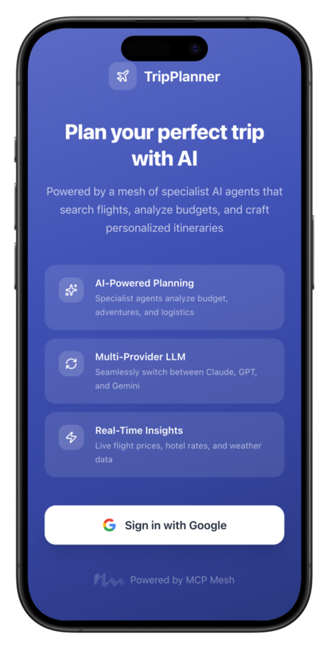
{: .app-screen }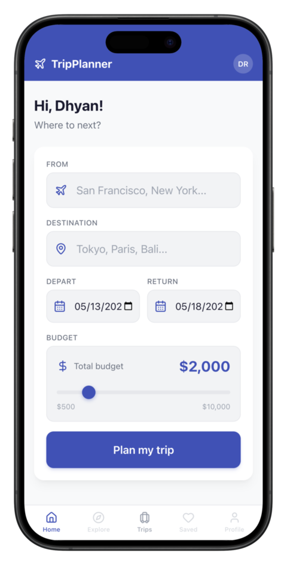
{: .app-screen }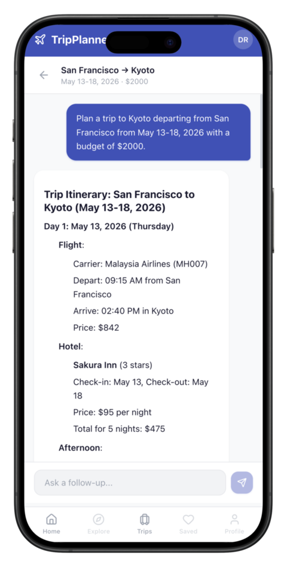
{: .app-screen }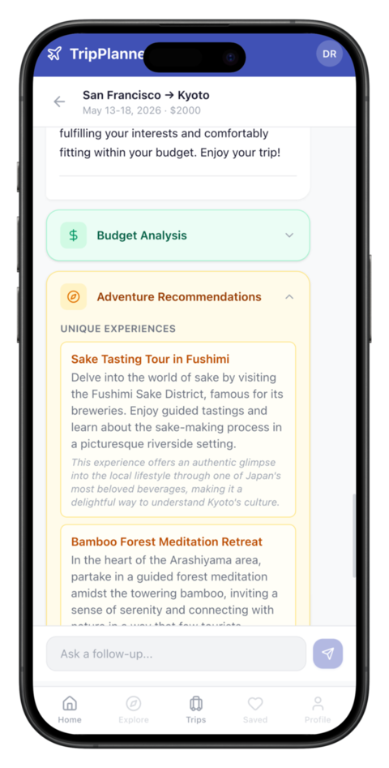
{: .app-screen }Ten days. Thirteen agents. Three LLM providers. One framework. You
went from meshctl scaffold to a Kubernetes-deployed,
multi-user AI application – and the flight_search function
you wrote in the first hour of Day 1 is still running, unchanged, in a
production pod. No rewrites. No migration layer. No “now let’s port it
to the real stack.” The code you wrote is the real stack. That
is what MCP Mesh was built for, and you just proved it works.
That’s the TripPlanner tutorial. You started with a single Python function and ended with a 13-agent system running on Kubernetes – with LLM planning, committee refinement, chat history, distributed tracing, and an HTTP API. Every agent is a plain Python file. Every deployment target uses the same code. The mesh handled the infrastructure so you could focus on the domain.
If you have questions, ideas, or feedback, find us on Discord or GitHub. We’d love to see what you build.